1.
Az öreg Yaztromo korához képest igen fürge. Átkeltek a Vörös folyón, magatok mögött hagyjátok a szántóföldeket, és csakhamar az erdő szélére értek. De Yaztromo nem áll meg. Egy keskeny ösvényen megy tovább a fák sűrűje felé. A fény egyre csökken; bokrok és kusza gyökerek borítják be a kanyargó ösvényt, megnehezítve az előrehaladást. Megkérded Yaztromót, vajon miért nem fél attól, hogy megtámadnak benneteket az erdei szörnyek. Vigyorogva azt válaszolja, hogy varázstudományát jól ismerik és tisztelik errefelé, és senkinek még csak eszébe sem jut Yaztromóval ujjat húzni! Az estét nyugodtan töltitek az erdőben, majd másnap késő délelőtt elértek az Öreg varázsló tornyához. Egy csigalépcsőn követed őt a magasba, a torony tetején lévő szobájába. Körös-körül polcok, szekrények és apró, beépített fülkék szegélyezik a falakat, rajtuk üvegek, kancsók, könyvek, dobozok és mindenféle tárgyak sorakoznak. Yaztromo leroskad öreg tölgyszékére - mostanra már igencsak elfáradt a nagy úttól. Belenyúl a zsebébe, és előveszi aranykeretes kecses szemüvegét. Felhelyezi az orrára, és fölüle rád mereszti a szemét. Kissé nyugtalan leszel ettől az átható pillantástól. Végül megszólal: - Aki le akarja győzni Malbordust, annak értenie kell egy keveset a varázsláshoz. Elég okosnak látszol ahhoz, hogy valamelyest elsajátítsd ezt a tudományt, de nem hinném, hogy van annyi időd, hogy mind a tíz varázslatot megtanuld tőlem. Mellesleg, nem tudom, tisztában vagy-e azzal, milyen kiváltságos helyzetbe kerültél, hogy az én varázstudományomat megismerheted. De a válság az válság! Fátyol rá! Melyik varázslatot tanítsam meg neked? Az Ajtónyitó,
Teremtményaltató, Varázsnyíl, Nyelv, Írásjelolvasó, Fény, Tűz, Ugrás, Csapdafelderítő, Vízteremtő varázslatok közül választhatsz. Lapozz a 34-re.
2.
A szoba kicsi, alig van benne bútor, csupán egy asztalt meg egy széket látsz. Egy véső és egy kalapács fekszik a széken, a padló faforgáccsal van tele. A falon egy két méterszer háromméteres farelief látható, mely az Óriás Homokhernyók által megtámadott letűnt várost ábrázolja. Ha közelebbről szeretnéd megnézni ezt a domborművet - lapozz a 302-re. Ha inkább kimész a szemközti ajtón - lapozz a 93-ra.
3.
Az ajtó egy jól megvilágított újabb folyosóra nyílik, amelyet szemmel láthatólag gyakran használnak. Ha balra akarsz indulni - lapozz a 320-ra. Ha jobbra akarsz menni - lapozz a 358-ra.
4.
A finom, friss víz eloltja szomjadat. Azonnal visszanyered az erődet, mivel a víz különleges erősítőszereket tartalmaz. Nyersz 4 ÉLETERŐ pontot! Álladon még mindig ott csorog a víz, amikor elindulsz, hogy folytasd a keresést. Lapozz a 370-re.
5.
Elveszed az egyik kést, és beteszed a hátizsákodba. Továbbmész a folyosón, de annak csakhamar vége szakad, és nem marad más hátra, minthogy visszafordulj, és átmenj az aranyeső alatt. Lapozz a 354-re.
6.
Nem tudod elkerülni, hogy rá ne lépj néhány porceláncsigára. Amint ezt megteszed, a csigák egy tömbbe állnak össze, és csaknem emberi alakká formálódva rád támadnak. Úgy érzed, mintha halálra köveztek volna. Mit teszel?
Karoddal védekezel? Lapozz a 245-re.
Elfutsz? Lapozz a 359-re.
Beleveted magad a tengerbe? Lapozz az 51-re.
7.
Amikor a Gyíkember meglát, hangosan sziszegve rád támad a kardjával.
Gyíkember ÜGYESSÉG 9 ÉLETERŐ 8
Ha legyőzöd - lapozz a 33-ra.
8.
Elesel, de rázuhansz a víz fölött emelkedő kiugróra. Vesztesz 2 ÉLETERŐ pontot! Hamarosan visszanyered az eszméletedet, és amilyen gyorsan csak tudsz, bemenekülsz az alagútba. Lapozz a 91-re.
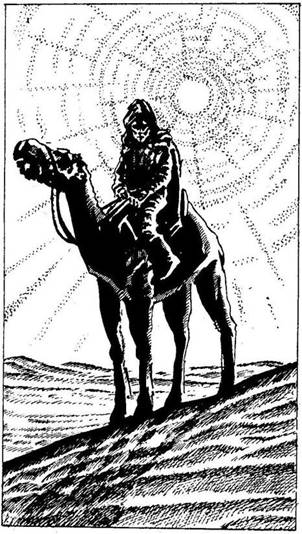
9.
Magasba emeled a harci kalapácsot, és rácsapsz vele a Sárkányra. A kalapács azonban lepattan róla, a szobor sértetlen marad. Nem a megfelelő Sárkányt választottad. Hirtelen gyengeség lesz úrrá rajtad, mintha gonosz erők védenék a szobrot. Vesztesz 1 ÜGYESSÉG és 2 ÉLETERŐ pontot! Most melyik Sárkányszobrot választod?
A Csontsárkányt? Lapozz a 362-re.
Az Ezüstsárkányt? Lapozz a 231-re.
Az Aranysárkányt? Lapozz a 247-re.
Az Ébenfa Sárkányt? Lapozz a 279-re
10.
A sivatag vibráló forróságában feléd közeledő alakra leszel figyelmes. Amint közelebb ér hozzád, látod, hogy az egy teveháton utazó férfi. Ha beszélni akarsz vele - lapozz a 99-re. Ha inkább lehasalsz, hogy ne vegyen észre, és megvárod, míg elhalad melletted - lapozz a 257-re.
11.
Ha a nyakadban egy aranymedál van, amelybe szívet véstek - lapozz a 258-ra. Ha nincs ilyen medál a nyakadban - Tedd próbára a SZERENCSÉDET! Ha SZERENCSÉD van - lapozz a 284-re. Ha nincs SZERENCSÉD - lapozz a 71-re.
12.
Yaztromo megmagyarázza, hogy az Ajtónyitó varázslattal bármelyik bezárt ajtót ki lehet nyitni. Megtanítja neked a varázsigét, melyet ilyenkor kell elmondanod, és azt is hozzáteszi, hogy ez a varázslat nem veszi majd túlzottan igénybe az energiádat; csupán 2 ÉLETERŐ pontot vesztesz minden esetben, ha ezt alkalmazod. Lapozz vissza a 34-re, de előbb jegyezd fel ezt a varázslatot a KALANDLAPODRA, és jelöld ugyanott a 2 ÉLETERŐ pont veszteséget.
13.
Egy másik csáp tekeredik a lábad köré, levegő után kapkodsz, miközben a vizet csapkodod magad körül, és megpróbálod leszúrni láthatatlan támadódat.
Csápos Szörny ÜGYESSÉG 8 ÉLETERŐ 10
Ha nem győzöd le a szörnyet legalább annyi Fordulóban, amennyi a jelenlegi ÜGYESSÉG pontjaid száma, vízbe fulladsz. Ha legyőzöd - lapozz a 165-re.
14.
A fazékban egy rézgyűrűt találsz, melybe villámot véstek. Mit teszel?
Az ujjadra húzod a gyűrűt? Lapozz a 277-re.
Fölemeled a fekete fazék
tetejét? Lapozz a 156-ra.
Fölemeled a piros fazék
fedelét? Lapozz a 183-ra.
Átmész a kamrán a boltíves
átjáróhoz? Lapozz a 20-ra.
15.
Az éjszakát nyugodtan töltöd, és pirkadatkor pihenten ébredsz. Nyersz 2 ÉLETERŐ pontot! Hátadra veted a hátizsákodat, és ismét útnak indulsz. Lapozz a 305-re.
16.
A nyílvessző beleáll a válladba, és felordítasz a fájdalomtól. Vesztesz 3 ÉLETERŐ pontot! Ha még mindig életben vagy - lapozz a 158-ra.
17.
A folyosó egy vasajtónál ér véget. Lenyomod a kilincset, és egy üres szobába jutsz, melynek két ajtaja van - az egyik balra nyílik, a másik pedig jobbra. Ha a bal oldali ajtót akarod kinyitni - lapozz a 298-ra. Ha a jobb oldali ajtót választod - lapozz a 216-ra.
18.
Kitöröd a Homokhernyó egyik fogát, melyet majd egyszer fegyverként használhatsz. Az övedbe dugod, és továbbmész délnek. Addig mész, míg a nap a nyugati láthatáron el nem tűnik. A felhőtlen égbolt alatt a sivatagban csakhamar igen hideg lesz. Ha tudsz Tüzet varázsolni - lapozz a 177-re. Ha nem tanultad meg ezt a varázslatot - lapozz a 395-re.
19.
Találomra azt a faliszőnyeget választod, amelyen hamuból fölemelkedő égő főnixmadár látható. Gyorsan beleteszed a hátizsákodba, és továbbmész a folyosón. Lapozz a 263-ra.
20.
A boltíves átjáró mögött nyíló rendezett folyosó jól meg van világítva. A padlót sem homok, sem por nem borítja, a falakon lévő faragványok és a szobrok teljesen épek. A folyosó csakhamar egy nyitott ajtónál ér véget. Belépsz az üres szobába, amelynek a túlsó végében újabb ajtót látsz, és észreveszel egy csapóajtót a padlón is. Ha az ajtót akarod kinyitni - lapozz a 307-re. Ha a csapóajtót választod - lapozz a 397-re.
21.
Az ajtó egy T elágazásra nyílik. Az egyik út az ajtó előtt visz jobbra és balra, a másik pontosan előtted indul előre. Semmi érdekeset nem látsz se jobbra, se balra, ezért egyenesen előre indulsz el. Lapozz a 46-ra.
22.
A tükröt az Éjszaka Réme elé tartod, de az egyszerűen apró darabokra töri a pálcájából kipattanó újabb villámmal. Nincs más választásod, kardoddal kell rátámadnod. Lapozz a 85-re.
23.
Mielőtt rálépnél a függőhidra, a varjú után nézel, amely elszáll Yaztromo tornya felé. A bárka legénységét egy csöppet sem zavarja meg váratlan megjelenésed, és nyugodtan folytatják a kirakodást. Átérsz a hídon, és délnek mész tovább a cserjésen át. Körülbelül egy óra múlva észak felől gomolygó füstre leszel figyelmes. Ha meg akarod nézni, mi okozza a füstöt - lapozz a 316-ra. Ha inkább továbbmész délnek - lapozz a 159-re.
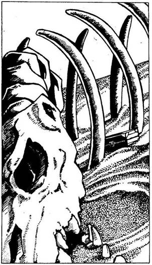
24.
Számodra ismeretlen teremtmény fehérre száradt csontváza mellett haladsz el. Bordacsontjai között a homokban egy fadoboz kiálló csücskét pillantod meg. Ha ki akarod ásni a homokból a dobozt, hogy megnézd, mi van benne - lapozz a 283-ra. Ha inkább továbbmész - lapozz a 70-re.
25.
Összeszeded minden erődet, és végül sikerül kimásznod a gödörből. Odamész a másik boltíves átjáróhoz, és átsétálsz alatta. Lapozz a 315-re.
26.
Ahogy múlik a nap, szomjúságod is egyre nő. Ha van nálad vízzel teli palack - lapozz a 217-re. Ha akarsz és tudsz is, varázsolj Vízteremtő varázslatot - lapozz a 372-re. Ha nem áll módodban inni - lapozz a 84-re.
27.
Magad elé tartod a tükröt, de a Szél kifújja a kezedből, és látod, hogy az a földön darabokra törik. Ismét a falhoz csapódsz. Vesztesz 2 ÉLETERŐ pontot! Mit fogsz most kipróbálni?
A Főnixes Faliszőnyeget? Lapozz a 229-re.
Az Ébenfa Maszkot? Lapozz a 241-re.
Egyiket sem? Lapozz a 312-re.
28.
Kardodat magasba emelve megpróbálod széthasítani az óriás rovart, miközben az igyekszik beléd döfni a fullánkját. Egyenként küzdj meg a Tűlegyekkel.
ÜGYESSÉG ÉLETERŐ
Első Tűlégy 5 6
Második Tűlégy 6 7
Harmadik Tűlégy 7 6
Ha te győzöl - lapozz a 168-ra.
29.
Lassan emeled le a tetőt, kíváncsi vagy, vajon mi lehet alatta. Nagy meglepetéssel és örömmel látod, hogy egy kis ezüst dísztárgy - egy Sárkányszobrocska van benne! Zsebre vágod az Ezüstsárkányt, és visszamész a folyosón, majd befordulsz jobbra az új elágazásba. Lapozz az 59-re.
30.
Egy nyúlós, ronda, Vasevőnek nevezett teremtmény zuhant rá a fejedre. Szerencsédre ez a lény csak fémet eszik, és teljesen veszélytelen az emberre, mert húst nem fogyaszt. Levakarod a sűrű
zselét a hajadról, de mégis úgy döntesz, hogy elhagyod a pincét. Visszarohansz, felszaladsz a lépcsőn az üres szobába, és kinyitod a másik ajtót. Lapozz a 307-re.
31.
Több mint egy órája fekszel eszméletlenül a sivatag homokjában. Tedd próbára a SZERENCSÉDET! Ha SZERENCSÉD van - lapozz a 220-ra. Ha nincs SZERENCSÉD - lapozz a 92-re.
32.
Kimondod a bűvös szavakat (1 ÉLETERŐ pontot vesztesz!), de nem történik semmi. Nem tudtad, hogy az aranyeső megfoszt minden varázserődtől. Vesztesz 1 SZERENCSE pontot! Nincs más választásod, valami mást kell elővenned a hátizsákodból. Lapozz a 115-re.
33.
Kiöntöd a zsák tartalmát, de abban csupán fűszerek és magok vannak. Gyorsan átkutatod a Gyíkember ruháját, és találsz benne egy vaskulcsot, amit a zsebedbe csúsztatsz. Továbbmész, s csakhamar eljutsz egy újabb T elágazáshoz. Ha balra akarsz továbbmenni - lapozz a 125-re. Ha jobbra akarsz továbbmenni - lapozz a 262-re.
34.
Válassz egyet az alábbi varázslatok közül. Ha megtanultad, ismét vissza kell majd lapoznod erre a pontra. Ha már négy varázslatot elsajátítottál - lapozz a 180-ra. Gondolj az előtted álló feladatra, mielőtt közölnéd Yaztromóval a választásodat. Melyik varázslatot választod?
Ajtónyitó Lapozz a 12-re.
Teremtményaltató Lapozz az 58-ra.
Varázsnyíl Lapozz a 136-ra.
Nyelv Lapozz a 194-re.
Írásjelolvasó Lapozz a 391-re.
Fény Lapozz a 223-ra.
Tűz Lapozz a 264-re.
Ugrás Lapozz a 301-re.
Csapdafelderítő Lapozz a 342-re.
Vízteremtő Lapozz a 367-re.

35.
Fogod a Sárkányokat, és sorban leteszed őket a földre. Azon töprengsz, vajon milyen rejtett erő lakozhat bennük. Melyik Sárkányt akarod elsőnek összetörni?
A Csontsárkányt? Lapozz a 87-re.
Az Ezüstsárkányt? Lapozz a 126-ra.
A Kristálysárkányt? Lapozz a 204-re.
Az Aranysárkányt? Lapozz a 62-re.
Az Ébenfa sárkányt? Lapozz a 324-re.
36.
Hátas-sasodon repülve elkiáltod a Varázsnyíl varázsigét (vonj le 2 ÉLETERŐ pontot!). Nyomban egy csillogó nyílvessző pattan ki az egyik ujjad begyéből, és egyenesen a lecsapni készülő Pterodactylus felé tart. A nyílvessző mélyen a hasába fúródik, de nem öli meg. Szélsebesen támad rád. Lapozz a 311-re.
37.
Varázsolsz (vonj le magadtól 1 ÉLETERŐ pontot!), és ekkor hirtelen el tudod olvasni a jeleket. A táblán egyszerű figyelmeztetés áll: NE IGYÁL A VÍZBŐL! Úgy döntesz, hogy azért lemosod a sebedet, attól nem lesz semmi bajod. Lapozz a 269-re.

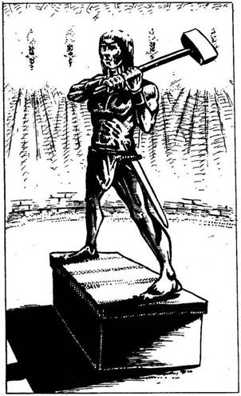
38.
Továbbmész a folyosón, s végül egy nagy terembe ész, melyet a falakra erősített fáklyák világítanak meg. Fönt a magas falakra csodálatosan szép arany kupolaszerű mennyezet borul. A terem közepén jókora bronzszobor áll, egy harcost ábrázol, aki a magasba emeli kalapácsát. Ahhoz, hogy eljuss a terem végében lévő alagút bejáratához, el kell haladnod a szobor mellett. Ha a szobor bal oldalán mész el - lapozz a 291-re. Ha a szobor jobb oldalán mész el - lapozz a 381-re.
39.
Kora délelőtt kegyetlenül megszomjazol. Ha van nálad vízzel teli palack - lapozz a 63-ra. Ha tudsz és akarsz is Vizet varázsolni - lapozz a 281-re. Ha nincs mit innod - lapozz a 355-re.
40.
A faliszőnyegek nagyok és díszesek. Különböző isteneket és istennőket ábrázolnak, ezek részben ember alakúak, részben állat formájúak, részben pedig félig ember, félig állat alakúak. Ha le akarod akasztani az egyik faliszőnyeget, és el akarod tenni a hátizsákodba - lapozz a 19-re. Ha nem nyúlsz a faliszőnyegekhez, hanem inkább továbbmész - lapozz a 263-ra.
41.
Semmi érdekeset nem találsz a Fekete Apostolok holmija között, kivéve egy hosszú áldozati tőrt, amit a hátizsákodba teszel. Egy boltíves átjárót látsz az oltár mögött, és úgy döntesz, hogy arra indulsz tovább. Lapozz a 341-re.
42.
A Kígyó Őr testén átlépve bemész a kapun, és egy elhagyatott tér közepén találod magad. Lapozz a 111-re.
43.
Miközben átvágsz a poros padlón a szemközti ajtóhoz, agyadat hirtelen borzalmas rémképek árasztják el. Rémülten felordítasz, amikor azt képzeled, hogy a szoba lángba borul. Testedet lángnyelvek nyaldossák, és a halál, úgy hiszed, elkerülhetetlen. Haláltusád vagy öt percig tart, majd elveszted az eszméletedet. Egy óra múlva térsz magadhoz, és amikor megpróbálsz felállni, érzed, hogy csaknem megbénultál, erőd elhagyott. Kezed még mindig remeg, teljesen össze vagy törve. Vesztesz 3 ÜGYESSÉG pontot! Odavonszolod magad a szoba végében lévő vasajtóhoz, és elhagyod rettegéseid színhelyét. Lapozz a 117-re.
44.
A kissé átlátszó függönyön át észreveszed, amint egy fehér palástos férfi lép be a terembe, serleggel a kezében. Aranycsattal rögzítette fejdíszét, amelyen széttárt szárnyú, a férfi homlokához simuló főnixmadár látható. Amikor a Pap észreveszi a Rabszolgaőrt, térdre veti magát, és fülét a halott
ember mellkasára szorítja. Aztán gyorsan végigpillant a termen, és ismét kirohan, anélkül hogy téged észrevenne. Nem vesztegeted tovább az időt, hanem nekiállsz kinyitni az ajtót. Lapozz a 336-ra.

45.
Tagbaszakadt ellenfeled egy Kalóz, aki igencsak jó kardforgató. Gyorsan előrántja rövid kardját, miközben a kíváncsi tömeg gyűrűbe zár benneteket.
Kalóz ÜGYESSÉG 9 ÉLETERŐ 8
Ha legyőzöd - lapozz a 166-ra.
46.
Körülbelül ötven métert teszel meg, amikor mély gödör állja el az utadat, amely előtted tátong a folyosón. Ha tudsz és akarsz is, alkalmazz Ugrás varázslatot - lapozz a 215-re. Ha megpróbálod átugrani a gödröt e mágikus segítség nélkül - lapozz a 259-re.

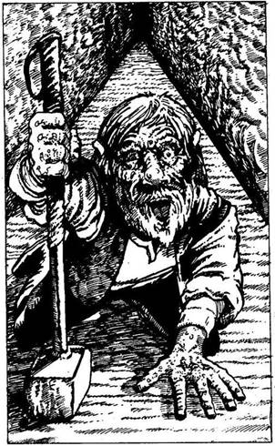
47.
Berohansz az ajtón, és egy keresztfolyosóhoz érsz. A folyosó végén, bal kéz felől megpillantod Leeshát, amint épp egy vasajtót próbál meg kinyitni. Jobbról egy Törpe kúszik feléd négykézláb. Arca piros, csupa hólyag. Olyan, mint akit napszúrás ért. Úgy látod, felismer, és ekkor gorombán rád kiált. Ha továbbra is Leeshát akarod követni - lapozz a 314-re. Ha beszélni akarsz a Törpével - lapozz a 171-re.
48.
A sas teste megvonaglik a halálos ütéstől. Úgy zuhansz le a hátáról a mélybe, akár egy kő, és a földhöz csapóda meghalsz. Kalandod itt véget ér.
49.
A folyosó egy T elágazásban ér véget. Ha balra akarsz fordulni - lapozz a 250-re. Ha jobbra akarsz fordulni - lapozz a 333-ra.

50.
Kardod élével kettévágod az agyagkorsót, és meglepetten hallod, hogy abból sziszegve szivárog a gáz. A doboz nem más, mint egy kifosztott kincsesláda, csakhogy a banditák nem dőltek be a benne elhelyezett csapdának. Elborít a mérgező gáz, muszáj beszívnod. Vesztesz 6 ÉLETERŐ és 1 ÜGYESSÉG pontot! Ha még mindig életben vagy - lapozz a 31-re.
51.
Berohansz a tengerbe, és a víz alatt úszol, ameddig levegővel bírod. Csak akkor jössz fel a felszínre, amikor már úgy érzed, hogy a tüdőd szétrobban. Visszanézel a partra, és látod, amint a Kagylószörny ott köröz a parton, ahol beugrottál a tengerbe. A part mentén úszol, és csak akkor mászol ki, amikor eltűnik a szemed elől a Szörny. Két Élelmiszeradagod elázott és ehetetlenné vált. Úgy döntesz, hogy óvatosságból nem a part mentén folytatod az utat, hanem inkább keleti irányba mész, befelé a sivatagba. Lapozz a 327-re.
52.
A maró szag egyre erősebbé válik, s nagyon rosszul kezded érezni magad. Forogni kezd veled a szoba, és elveszted az eszméletedet. A medence szélén állsz imbolyogva, majd belezuhansz. Tedd próbára a SZERENCSÉDET! Ha SZERENCSÉD van - lapozz a 8-ra. Ha nincs SZERENCSÉD - lapozz a 130-ra.
53.
Nem vesztegeted az időt azzal, hogy átkutasd a Csontváz Emberek testét, hanem átfutsz a boltíves átjárón egy másik kamrába. Lapozz a 119-re.
54.
Kimondod a varázsige szavait, és könnyedén átugrasz a falon. Vonj le magadtól 3 ÉLETERŐ pontot! Egy elhagyatott téren landolsz. Lapozz a 111-re.
55.
A széknek varázsereje van, és csak kevesen mernek ráülni. Tedd próbára a SZERENCSÉDET! Ha SZERENCSÉD van - lapozz a 286-ra. Ha nincs SZERENCSÉD - lapozz a 360-ra.
56.
A folyosó ismét élesen balra kanyarodik, és csakhamar újabb T elágazáshoz érsz. Egyenesen továbbmenni nem akarsz, mert arra semmi érdekeset nem látsz, így aztán úgy döntesz, hogy jobbra fordulsz. Lapozz a 46-ra.
57.
Egy újabb kupac landol a lábad előtt, és erős, csípős szag árad belőle. Úgy döntesz, hogy veszélyes lehet, ha tovább maradsz ebben a sötét pincében, ezért visszamész a lépcsőn, s benyitsz a másik ajtón. Lapozz a 307-re.
58.
Yaztromo közli veled, hogy a Teremtményaltató varázslattal bármely emberi lényre álmot lehet bocsátani. Megtanítja neked a varázsigét, amit ilyenkor kell elmondanod, és azt is hozzáteszi, hogy ez a varázslat nem veszi majd túlzottan igénybe az energiádat; csupán 1 ÉLETERŐ pontot vesztesz minden esetben, ha ezt alkalmazod. Lapozz vissza a 34-re, de előbb jegyezd fel ezt a varázslatot a KALANDLAPODRA, és jelöld az 1 ÉLETERŐ pont veszteséget.
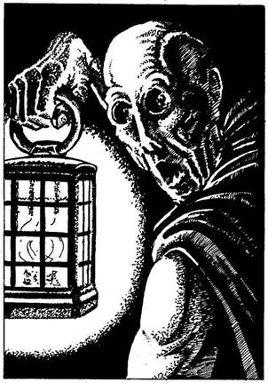
59.
A folyosón egy köpenyes alakot látsz, aki lámpással a kezében megy előtted. Rákiáltasz, de az alak erre még szaporábban szedi a lábát. Utánaeredsz, és már majdnem beéred, amikor megfordul, és megpillantod undorító arcát. Sárga bőr feszül a koponyájára; mélyen ülő szeme vérvörös. Nagy bátorság kell ahhoz, hogy kibírd a Fantom tekintetét. Dobj két kockával! Ha a kapott összeg ugyanannyi vagy kevesebb, mint ÜGYESSÉG pontjaid száma - lapozz a 280-ra. Ha a kapott összeg nagyobb, mint ÜGYESSÉG pontjaid száma - lapozz a 253-ra.

60.
Amint a kötelet elvágod, a kosár a kőpadlóhoz csapódik, és a benne lévő különféle régi csontok szétszóródnak a földön. Amikor összekotrod a csontokat, fölfedezed, hogy közülük az egyik Sárkány alakú. Ez az a tárgy, amit kerestél! A faragott csontot zsebre vágod, és elindulsz a túloldali ajtó felé. Lapozz a 21-re.
61.
Nem kegyelmezel a Gnómnak, keresztüldöföd a kardoddal. Átkutatod a szobáját, és egy bádogdobozban bíborszínű selyemerszényt találsz. Kinyitod az erszényt, mely egy ezüst karszalagot rejt - rajta hatalmas smaragd díszeleg. Ha fel akarod venni a karszalagot - lapozz a 384-re. Ha inkább visszamászol a létrán, és elmész az utolsó útkereszteződéshez - lapozz a 262-re.
62.
A földön heverő kis szobor ártalmatlannak látszik, de gyanítod, hogy nem lesz könnyű szétzúzni. Ha van nálad harci kalapács - lapozz a 247-re. Ha nincs nálad ilyen fegyver - lapozz a 193-ra.
63.
Az értékes vizet villámgyorsan kihörpinted. Belenézel az üres palackba, és már sajnálod, hogy az egészet kiittad. Nincs más választásod, minthogy továbbmenj, de legalább felfrissültél. Lapozz a 116-ra.
64.
Az egyik dobozban láncon lógó aranymedált találsz, melybe egy szívet véstek. Ha a nyakadba akarod akasztani a láncot a medállal - lapozz a 163-ra. Ha inkább otthagyod a dobozban, és visszamész abba a szobába, amelyikben utoljára jártál, hogy inkább egy másik ajtóval próbálkozz - lapozz a 298-ra.
65.
A Tüskés Szemre semmilyen hatással nincs saját tükörképe, és lecsap rád. A Tükröt a földre dobod, és amint kardot rántasz, hallod, ahogy a Tükör darabokra törik. Vesztesz 1 SZERENCSE pontot. Lapozz a 236-ra.
66.
Hamarosan elérkezel egy másik ajtóhoz. Egyetlen hang sem szűrődik ki bentről, de amikor lenyomod a kilincset, azt tapasztalod, hogy az ajtó kulcsra van zárva. Mit teszel?
Ajtónyitó varázslatot alkalmazol
(ha tudsz)? Lapozz a 322-re.
Megpróbálod kinyitni az ajtót az aranykulccsal
(ha van ilyen a birtokodban)? Lapozz a 110-re.
Továbbmész a folyosón? Lapozz a 17-re.
67.
A kapitány elmosolyodik, amikor átadod neki az aranyat, és azt mondja, reméli, hogy élvezni fogod a hajóutat. Kezet rázol vele, és kimész a kabinból. Lapozz a 102-re.

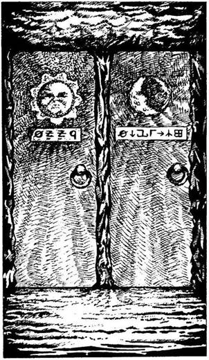
68.
Dühösen rácsapsz a zárra, erre az végre enged. Az ajtó egy folyosóra nyílik, amelyen addig mész, míg a végén lévő két ajtóhoz nem érsz. Az egyik ajtón a Nap, a másikon pedig a Hold képét látod. Mindkét kép alatt különös írásjelek vannak. Mit teszel?
Írásjelolvasó varázslatot
alkalmazol? Lapozz a 255-re.
Benyitsz a Nap jelzésű ajtón? Lapozz a 243-ra.
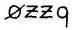
Benyitsz a Hold jelzésű ajtón? Lapozz a 273-ra.
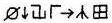
69.
Belenyúlsz a hátizsákodba, és odaadod a kis csengettyűt a boldog Gnómnak, aki ekkor kinyitja a fémdobozt, egy bíborszínű selyemerszényt vesz elő, és odahajítja neked. Kinyitod az erszényt, és egy ezüst karszalagot találsz benne, rajta hatalmas smaragddal. Felhúzod a karszalagot kardforgató karodra, és elbúcsúzol a Gnómtól. Lapozz a 384-re.
70.
Alig egy órája mész, amikor a nap kezd lenyugodni. A homoksivatagban nincs búvóhely, így az éjszakát a szabad ég alatt töltöd, majd reggel ismét útra kelsz. A délelőtt folyamán igencsak megszomjazol, és egy kis vízre vágysz. Körülnézel, és ekkor hirtelen egy hagyma formájú zöld növényt pillantasz meg; tüskék borítják, és olyan, akár egy kis kerek kaktusz. Ha ketté akarod vágni a növényt a kardoddal - lapozz a 120-ra. Ha tudsz és akarsz Vízteremtő varázslatot alkalmazni - lapozz a 345-re. Ha továbbmész délnek - lapozz a 192-re.
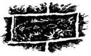
71.
A Fekete Apostolok nem hiszik el a történetedet, és rád támadnak sarlójukkal. Lapozz a 188-ra.
72.
A sivatag gyorsan felforrósodik, és a perzselő napsugarak alatt folytatod az utadat. Nem messze, nyugati irányban csakhamar egy kis ligetet veszel észre, ahol nagy madarak köröznek a fák fölött. Ha oda akarsz menni a fákhoz - lapozz a 142-re. Ha inkább dél felé folytatod az utadat - lapozz a 39-re.
73.
Leeshát meglepi, hogy bejutottál belső templomába és legyőzted őreit. Felkel díványáról, és kezében egy fénylő, fekete félhold alakú tárgyat tartva elindul feléd. Ha az Óriási Homokhernyó fogával akarsz és tudsz megküzdeni vele - lapozz a 219-re. Ha a kardoddal akarsz rátámadni - lapozz a 282-re.
74.
Belépsz az alagútba, és azonnal megérzed, hogy a lábad alatt lejteni kezd a föld. Végül eljutsz egy mélyen fekvő, vízzel elárasztott szobához. A víz egy falra erőtett oroszlánfej szájából zubog. A szemközti falból kis kiugró emelkedik a víz fölé, ahonnan az alagút tovább folytatódik. Vállat vonsz, és belegázolsz a derékig érő zavaros vízbe. Alig teszel meg néhány lépést, amikor egy hosszú, polipszerű csáp nyúlik ki hirtelen a vízből, amely kavarogni kezd, mert a csáphoz tartozó test megérezve az étel szagát, ott köröz már körülötted. Hirtelen egy másik csáp a lábad köré csavarodik, és megpróbál lehúzni a víz alá. Előrántod a kardodat, és csapkodni kezdesz vele. Ha van Sellőpikkely Karperec a kezeden - lapozz a 396-ra. Ha nincs - lapozz a 1-3-ra.
75.
A gonosz Hárpia rád veti magát, és borotvaéles karmaival megtámad.
Hárpia ÜGYESSÉG 8 ÉLETERŐ 5
Ha legyőzöd, folytasd az utat déli irányba, de közben éberen figyeld, nem bukkan-e fel újabb ellenséges teremtmény. Lapozz a 86-ra.
76.
Elvonszolod magad a tótól, hogy ne érezd a felszálló gőzöket, mert már rosszul vagy tőlük. Amikor már lábra tudsz állni, sietve visszamész a folyosón, amilyen gyorsan csak tudsz. Lapozz a 364-re.
77.
Mire túljutsz a törött üvegeken, már nem látsz senkit. A folyosó halad tovább. Elmész egy boltíves átjáró mellett, amely a folyosóról balra nyílik. Bárki dobta is az üveget, erre nem futhatott, így hát egyenesen mész tovább. A folyosó hamarosan egy T elágazásban ér véget, és rájössz, nem valószínű, hogy megtalálod a merénylődet. Arra gondolsz, hogy talán Malbordus űzött gúnyt belőled. Fontolóra veszed, merre is menj tovább. Ha balra indulnál - lapozz a 250-re. Ha inkább jobbra mennél - lapozz a 333-ra.

78.
Nem messze a part mentén egy pálmasort pillantasz meg, és úgy döntesz, arra mész. Két kókuszdiót találsz a parton, amelyeket a kardoddal kettévágsz. Kiiszod a tejet, megeszed a kókusz fehér húsát, aztán lepihensz az árnyékban. Nyersz 3 ÉLETERŐ pontot! Amikor átvizsgálod a holmidat, észreveszed, hogy a tengervíz átszivárgott a zsírpapíron, amibe az Élelmiszert csomagoltad. Dobj 1 kockával, és annyi Élelmiszeradagot vonj le magadtól, ahányat dobtál. Ha 3-at vagy ennél többet dobsz, akkor 1 SZERENCSE pontot is vesztesz. Ha végre elég erősnek érzed magad ahhoz, hogy folytasd az utadat, felállsz, és eldöntöd, merre menj. Ha a sivatagon át keletnek indulsz - lapozz a 327-re. Ha inkább a part mentén délnek mész tovább - lapozz a 151-re.
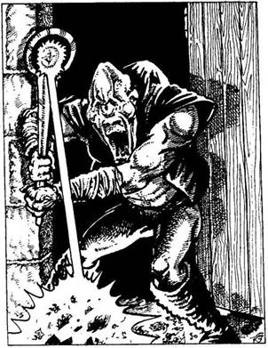
79.
Az ajtó egy gyertyával megvilágított kamrába nyílik, hol erős dohszag terjeng. A föld tele van törmelékkel - rothadó ételmaradékkal, hajcsomókkal, hamuval, fogakkal és állati ürülékkel. Amikor az ajtó becsukódik mögötted, az előtted lévő ajtó kinyílik, s egy torz, egyszemű mutáns (alakváltoztató) ront be a szobába magasra tartott ezüstrúddal a kezében. Fehér villám pattan ki a botból, és szénné égeti a lábad előtt a padlót. Kint már lenyugodott a nap, és az Éjszaka Réme lopakodó léptekkel, zsákmány után kutatva járja Vatos folyosóit. Ha a kardodat akarod használni az undorító teremtmény ellen - lapozz a 85-re. Ha inkább új fegyvert keresel a hátizsákodban - lapozz a 309-re.

80.
A folyosó ismét jobbra kanyarodik; egy vasajtóhoz érsz, mely a jobb oldali falból nyílik. A távolban villódzó fényeket látsz, amelyek a folyosó félhomályában táncolnak. Ha ki akarod nyitni a vasajtót - lapozz a 153-ra. Ha meg akarod vizsgálni a villódzó fényeket - lapozz a 339-re.
81.
A délutáni nap könyörtelenül tűz, olyan erővel, hogy a kiszáradt homokból perzselő fuvallatok csapnak az arcodba. Úgy érzed, mintha tüzes kemence lenne a szád és a torkod, s egyre jobban kínoz a szomjúság. Vesztesz 4 ÉLETERŐ pontot! Kétségbeesetten indulsz tovább, hogy vizet keress. Lapozz a 24-re.
82.
Az ékszeres ládikóban egy papírtekercs van. A következő olvasható rajta: „A Halál Küldönce vár!” Végigfut a hideg a hátadon a gondolatra, és darabokra téped a papírt. A ládikót a falhoz vágod dühödben, körülnézel, és eldöntöd, mit is csinálj. Mit teszel?
Magadhoz veszel néhány
drágakövet? Lapozz a 143-ra.
Elveszed az arany csontváz-
szobrocskát? Lapozz a 386-ra.
Kimész a szobából a szemközti
ajtón? Lapozz a 3-ra.
83.
A Gnóm hálás neked, amiért nem ölted meg. Elmondja, hogy sok-sok évvel ezelőtt véletlenül akadt rá Vatosra, és úgy határozott, hogy ott marad. Ő csupán utcaseprő, de boldog. Vatos sokáig elhagyatott volt, de aztán egyre több férfi és mindenféle más teremtmény is itt talált menedéket, és sokan közülük itt is maradtak. Törvény nem létezik Vatosban, nem uralkodik senki sem, bár a leghatalmasabbak mindig elérik céljukat. Az átutazó karavánokat élelemért szokták megtámadni, s a
portyákat a Főpapnő és rabszolgái szervezik. Megkérded a Gnómtól, vajon nem hallott-e Malbordusról, de ő megrázza a fejét, és így felel: „Nem sokat törődöm az emberekkel. Csak összeszedem a szemetet és söprögetek. Nincs valami eladnivalód? Sokat adnék egy olyan különös szerkentyűért, amelybe ha belenézel, a dolgok közelebb kerülnek, mint amennyire valójában vannak.” Ha van egy távcsöved, amit eladhatsz neki - lapozz a 138-ra. Ha nincs nálad olyan tárgy, amilyenre a Gnóm vágyik - lapozz a 321-re.

84.
A délutáni nap könyörtelenül tűz, olyan erővel, hogy csak úgy perzsel a homok. Szád és torkod teljesen kiszárad, egyre jobban szenvedsz a szomjúságtól. Vesztesz 4 ÉLETERŐ pontot! Kétségbeesetten indulsz tovább, hogy vizet keress magadnak. Lapozz a 303-ra.
85.
Az Éjszaka Réme félelmetes ellenfél, és nehéz egy szál karddal legyőzni.
Éjszaka Réme ÜGYESSÉG 10 ÉLETERŐ 10
Ha te nyersz egy Fordulót, dobj egy kockával. Ha 1 és 3 között dobsz, nem sebezted meg az Éjszaka
Rémének élőholt testét. Ha 4 és 6 között dobsz, akkor a szokásos módon sebezted meg őt. De minden egyes Forduló, amit az Éjszaka Réme nyer, ÉLETERŐDET 2 ponttal, ÜGYESSÉGEDET pedig 1 ponttal csökkenti a fénycsóva életelszívó hatása miatt. Ha az ÜGYESSÉGED 0-ra csökken, kiszáll belőled az élet és meghalsz. Ha te győzöl - lapozz a 390-re.
86.
Amint mész előre, hirtelen egy bőrerszény hullik le az égből a lábad elé. Kinyitod az erszényt, és egy levélkét találsz benne. Yaztromo írta. „Barátom, rossz hírt kell közölnöm veled. Malbordus előtted jár. De tekints a magasba, és megtalálod a segítséget, amellyel behozhatod lemaradásodat.” Így szól az üzenet. Megfogadod a varázsló utasítását, feltekintesz az égre, és első pillantásra mintha egy újabb Hárpiát látnál, de amikor jobban szemügyre veszed, látod, hogy egy óriás sas cirkál fölötted az égen, majd könnyedén leszáll melléd. A hátára vesz, és máris a levegőben repülsz a Koponyák Sivataga felé. Szerencséd azonban nem túl hosszú életű, ugyanis csakhamar baljós rikácsolás üti meg a füledet. Egy hatalmas Pterodactylus zuhanórepülésben támad rá a sasra. Ha van nálad íj és nyílvessző - lapozz a 132-re. Ha akarsz és tudsz, Varázsnyíl varázslatot alkalmazhatsz - lapozz a 36-ra. Ha nincs nyilad - lapozz a 363-ra.
87.
A földön heverő kis szobor ártalmatlannak látszik, de gyanítod, hogy nem lesz könnyű szétzúzni. Ha van nálad harci kalapács - lapozz a 362-re. Ha nincs nálad ilyen fegyver - lapozz a 193-ra.
88.
Az ajtó egy üres szobába nyílik, mindössze két nyitott láda áll a földön. Szokatlanul hideg van benn, és sűrű a félhomály. A sarokban egy agyagserleget találsz, amelynek a belső karimájára egy szívet véstek. Elteszed a serleget a hátizsákodba, és ugyanarra távozol a szobából, amerre bejöttél, mivel más kijárat nincs. Visszamész a folyosón a legutolsó elágazáshoz. Lapozz 250-re.
89.
Körülnézel, de az öreget nem látod sehol. Gyorsan végigkutatod a tolvajok zsebeit, és találsz egy kis sárgaréz távcsövet meg három ezüstgombot. Elteszed a szerzeményeidet, és ismét útra kelsz, hogy szállást keress magadnak. Lapozz a 379-re.
90.
Épphogy sikerül átbújnod az ajtóban lévő lyukon, mikor a mennyezet óriási puffanással leszakad. Felkászálódsz, és körülnézel a szobában, ahová kerültél. Lapozz a 2-re.
91.
Abból az alagútból, amelyen éppen haladsz, egy újabb ágazik el, s így választási lehetőséged van. Ha továbbra egyenesen akarsz menni - lapozz a 347-re. Ha inkább balra fordulsz az új alagútba - lapozz az 59-re.
92.
Amikor felébredsz, igen gyengének érzed magad. Felülsz, és ekkor a homokban lábnyomokat veszel
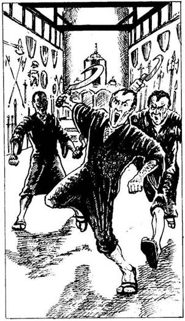
észre - de azok nem tőled származnak. Sietve átvizsgálod a hátizsákodat, és látod, hogy az összes aranyadat ellopták. Átkozod balszerencsédet, és ismét útnak indulsz felé. Lapozz a 70-re.
93.
Az ajtó egy nagy csarnokba nyílik; falait kétfelől fegyverek és vértek díszítik. A csarnok végében lévő emelvényen oltár áll, amely előtt három sárga bőrű férfi rendkívül ünnepélyesen ölti fel sötétbarna köntösét. Az egyik észrevesz, és jelt ad a többieknek. Mindhárman felragadnak egy-egy sarlót, és elindulnak feléd. Ha azt akarod nekik mondani, hogy ajándékot hoztál Leeshának, Vatos Főpapnőjének- lapozz a 11-re. Ha inkább megküzdesz velük - lapozz a 188-ra.
94.
Miután elrebeged a varázsigét (vonj le magadtól 1 ÉLETERŐ pontot!), lassan kezded felfogni a csigák alakjának értelmét. Ez figyelmeztetés számodra! A partszakasz következő kétszáz métere szent terület, és oda halandók nem léphetnek! Ha ezt teszed, magadra haragítod a part Démonát. Ha úgy döntesz, hogy nem érdekel a figyelmeztetés és továbbmész a parton - lapozz 6-ra. Ha inkább kelet felé veszed az utadat a sivatagon át - lapozz a 327-re.

95.
A fény egyre csökken, ahogy beljebb és beljebb mászol az alagútban, míg végül már a kezedet sem látod. Mit teszel?
Fényvarázslatot alkalmazol? Lapozz a 221-re.
Továbbmászol a sötétben? Lapozz a 246-ra.
Visszamászol az alagútból, kimész a szobából
és felmész a folyosón? Lapozz a 344-re.
96.
Már épp be akarsz lépni a boltíves átjárón át a mögötte lévő kamrába, amikor a Csontváz Emberek fölkelnek a földről. Alig hiszel a szemednek, amikor látod, hogy lassan közelednek feléd. Kővé dermedve állsz, és képtelen vagy megakadályozni, hogy a melledbe döfjék lándzsájukat. Térdre zuhansz, majd arccal a földre buksz. Kalandod itt véget ér!

97.
A sisakot ügyes kezű vaskovács készítette. Kitűnően megvéd. Nyersz 1 ÜGYESSÉG pontot! Elindulsz a folyosón délnek, hogy megkeresd az első Sárkányszobrocskát. Lapozz a 140-re.
98.
Egy márványpadlós szobába lépsz be, amelyben nincs más, csak egy szép női fejet ábrázoló bronzszobor, amit a szemközti falhoz erősítettek. Meglepődsz, amikor a szobor ajka megmozdul, és hallod, amint nyugodt hangon így szól: - Üdvözöllek a kérdések szobájában. Az idejét sem tudom, mikor beszéltem bárkivel is utoljára. Köteles vagy felelni a kérdéseimre, vagy meghalsz! Ha pontosan felelsz mindenre, jutalmad nem marad el. Ha viszont ezt nem teszed meg, úgy meglakolsz érte. Mondd meg hát nekem, hány Aranytallért adott Leesha a művészeti verseny győztesének? Ha tudod, hány Aranytallér volt a díj, lapozz arra a pontra. Ha nem tudod a választ - lapozz a 154-re.

99.
Amikor a sivatagi utazó megpillant, kardot ránt és megállítja a tevéjét. Odakiáltod neki, hogy nem akarod megtámadni. Megtudod tőle, hogy egy kereskedőkaravánhoz szeretne csatlakozni. Megkérded, vajon nincs-e egy kis fölösleges vize. Erre ő felajánl neked egy palackkal, de nem pénzt kér érte. Ha akarsz és tudsz is érte adni egy ezüstgombot vagy egy gyöngyszemet, jegyezd fel a cserébe felajánlott tárgyat a KALANDLAPODRA. Búcsút intesz neki, aztán ismét kelet felé folytatod az utadat. Lapozz a 257-re.
100.
Csak egy-két kortyot iszol a folyadékból, amikor iszonyúan rosszul leszel. Néhány fű, amelyből a főzet készült, mérgező volt. Dobj két kockával, és a kapott összeget vond le ÉLETERŐ pontjaidból! Ha még mindig életben vagy - lapozz a 76-ra.
101.
Iszonyú lelkiismeret-furdalásod támad, amint kihúzod a kardodat a halott férfi testéből. A hátára fordítod, és ekkor látod, hogy nem idevalósi; minden bizonnyal azért küldték utánad, hogy segítsen neked. Megpróbálod elhitetni magaddal, hogy ez az ember vagy kincsvadász, vagy orgyilkos. De bűntudatod ettől nem múlik el. Vesztesz 2 SZERENCSE pontot! Itt azonban már nincs mit csinálnod, nem marad más választásod, mint hogy továbbmenj. Lapozz a 80-ra.
102.
A bárka nem túl nagy, és nem is alkalmas rá, hogy utasokat szállítson, de találsz egy vastag kötélcsomót, amelyre lefekszel. A hosszú út után kellőképpen kifáradva hamar elalszol, és csak akkor ébredsz fel, amikor a legénység egyik tagja megveregeti a válladat, aztán közli veled, hogy feltűnt a láthatáron Feketehomok kikötő. Felkelsz, és amint egyre közelebb kerültök a parthoz, észreveszed az egyre nagyobbra és nagyobbra növő félelmetes várost; tíz perc múlva beúszik a hajó a várost védő falak boltíves kapuja alatt. A legénység csakhamar kiköt, és engedelmesen teljesíti a kapitány dühödt parancsait, aki szemmel láthatóan minél előbb szeretné megrakni a bárkát az ott várakozó áruval,
és még az est leszállta előtt tovább akar hajózni. Elköszönsz tőlük, majd elindulsz, hogy szállást keress magadnak éjszakára. Az árnyak megnőnek körülötted, amint a keskeny utcákon és sikátorokon haladsz. Hirtelen rongyos öregember jelenik meg az egyik ház ajtajában, és megszólít: - Szállást keresel, idegen? Tudok egy helyet, ahol szobát, levest és kenyeret kapsz, s mindezt csupán 1 Aranyért. Ha érdekel, kövess! - Ha kifizeted neki a kért összeget és követed az öreget - lapozz a 332-re. Ha inkább magad keresel szállást - lapozz a 379-re.
103.
Malbordus észreveszi, hogy varázserejének nem tudsz ellenállni, és elátkozott kardját előrántva magabiztosan közeledik feléd. Kardjának bénító ereje van, és most már csak saját kardforgató tehetséged védhet meg.
Malbordus ÜGYESSÉG 10 ÉLETERŐ 18
Ha a csata során elveszted az első három Fordulót, megbénít a gonosz kard, és Malbordus győz. Káosz lesz úrrá egész Allansiában. Ha a csatát anélkül nyered, hogy elvesztenél három Fordulót - lapozz a 400-ra.
104.
A nyílvessző célba talál, de nem öli meg a Pterodactylust. Vijjogva megfordul, majd ismét lecsap rátok. Ha újabb nyílvesszőt akarsz beleereszteni az óriáshüllőbe - lapozz a 199-re. Ha inkább hagyod, hogy a két repülő óriás egymással küzdjön meg - lapozz a 311-re.
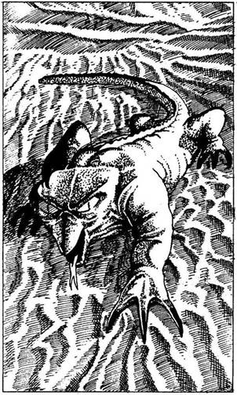
105.
A művész dühösen összeráncolja a szemöldökét, és így szól: - Rettenetes az ízlésed! Nem tudsz megkülönböztetni egy műalkotást egy Ork hónaljától! - Ha meg akarod támadni a pimasz művészt - lapozz a 123-ra. Ha inkább hagyod, hogy a munkáját végezze, és elmész mellette a folyosón - lapozz a 376-ra.
106.
Hirtelen mozgást veszel észre a homokban, és egy nagy, gyíkhoz hasonló állatot pillantasz meg. Amikor odafut hozzád, látod, hogy a feje olyan, mint egy madáré, a szeme meg nagy, sárga, akár a békáké. Ez az állat nem más, mint a szörnyűséges Baziliszkusz. Mit teszel?
Karddal támadsz rá? Lapozz a 228-ra.
Tüzet varázsolsz? (Ha tudsz) Lapozz a 189-re.
Átkutatod a hátizsákodat, nincs-e benne
valamilyen más fegyver? Lapozz a 313-ra.
107.
Az erszényben egy apró aranykulcsocskán kívül semmit nem találsz. Zsebre teszed, és folytatod az utadat. Lapoz a 10-re.
108.
Egyre csak mész előre a perzselő sivatagi napsütésben. Késő délután a homokban lábnyomokat veszel észre, amelyek utadat keresztezve keletről nyugatra haladnak. Ha követni akarod a lábnyomokat - lapozz a 205-re. Ha inkább továbbra is délnek mész - lapozz a 303-ra.
109.
Miközben a sötétben mászol, nem veszed észre az előtted kihúzott csapdát - egy drótot -‚ és véletlenül beleakad a karod. Egy láthatatlan nyílból nyílvessző repül feléd. Tedd próbára a SZERENCSÉDET! Ha SZERENCSÉD van - lapozz a 16-ra. Ha nincs SZERENCSÉD - lapozz a 368-ra.
110.
A kulcs épp beleillik a zárba, mely egyetlen mozdulatra kinyílik. Kardod markolatát jól megszorítva kinyitod az ajtót. Lapozz a 98-ra.
111.
Körülnézel, de életnek semmi nyomát sem leled. A tér túloldalán nagy boltíves átjárót látsz. Akár erre is elindulhatsz, hogy megkeresd a Sárkányszobrokat. Átmész a boltív alatt, és egy lépcsőhöz érsz; ez levezet egy fáklyákkal megvilágított folyosóra. Amint óvatosan mész lefelé a lépcsőn, arra gondolsz, vajon hol lehet Malbordus. A lépcsősor aljában egy vasládikót pillantasz meg. Ha ki akarod nyitni a ládikót - lapozz a 287-re. Ha inkább továbbmész a folyosón déli irányba - lapozz a 140-re.
112.
A szőlő éppolyan finom, mint amilyennek látszik. Különleges, gyógyító erejű szőlő ez. Nyersz 4 ÉLETERŐ pontot! Amikor jóllaktál, továbbmész a folyosón. Lapozz a 237-re.

113.
Kardot rántasz, és rárontasz a gyilkos Fekete Elfekre. Egyszerre csak eggyel küzdj meg!
ÜGYESSÉG ÉLETERŐ
Első Fekete Elf 5 6
Második Fekete Elf 6 5
Ha legyőzöd őket, elveheted a 2 Aranytallért, amit a holmijuk között találsz, és elveheted az egyik íjukat meg a maradék két nyílvesszőt. Eltemeted a szerencsétlenül járt embert, akit az Elfek megöltek, aztán ismét útnak indulsz délnek. Lapozz a 285-re.

114.
Amint kimondod a varázsige szavait, kattan a zár, és könnyen kinyitod az ajtót. Vonj le magadtól
2 ÉLETERŐ pontot a varázslásért, és lapozz a 88-ra.

115.
A Szél ismét fúj egyet feléd, és a falhoz vág, miközben lázasan kotorászol a hátizsákodban. Vesztesz 2 ÉLETERŐ pontot! Mit veszel elő a hátizsákodból?
Egy Tükröt? Lapozz a 27-re.
Egy Főnixes Faliszőnyeget? Lapozz a 229-re.
Egy Ébenfa Maszkot? Lapozz a 241-re.
Egyiket sem? Lapozz a 312-re.

116.
A nap egyre csak tűz rád, és nincs hová menekülnöd a sugarai elől a kopár vidéken. Ha van kendő a fejeden - lapozz 289-re. Ha nincs semmi a fejeden - lapozz a 75-re.

117.
Az ajtó egy folyosóra nyílik. Amikor kinézel balra, nem látsz semmi érdekeset, de amikor jobbra tekintesz, villódzó fényeket veszel észre a folyosó sötétjében. Kíváncsi vagy, vajon miért mozognak a fények, és elindulsz feléjük. Lapozz a 339-re.
118.
Miután elrebeged a varázsigét, egy csillogó nyílvessző pattan ki az egyik ujjbegyedből, és egyenesen a feléd repülő Tűlégy felé tart. Azonnal megöli. Gyorsan varázsolsz még két nyílvesszőt, és megcélzod a másik két óriásrovart. (Ne felejts el 6 ÉLETERŐ pontot levonni magadtól a háromszoros varázslásért!) Lapozz a 168-ra.

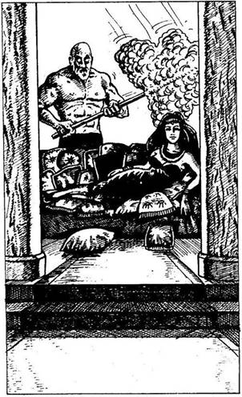
119.
Átmész a boltíves átjárón, majd fölsietsz a márvány lépcsősoron, és egy pompásan berendezett terembe jutsz. Magas mennyezetét márványpillérek tartják. A pillérek között gyönyörű, kézzel szőtt piros szőnyeg vezet fel egy újabb lépcsősorhoz, amelynek a tetején atlaszselyem párnákkal teleszórt kanapén egy csodaszép nő fekszik. Ronda, kopasz fejű teremtmény legyezi. Izmos felsőteste akár egy férfié, de az arca beesett, sovány, a szeme tejfehér. Leesha szentélyébe jutottál. A nő elmosolyodik, majd csettint az ujjával, erre vak szolgája döngő léptekkel lemegy a lépcsőn, és rád támad.
Szolga ÜGYESSÉG 8 ÉLETERŐ 8
Ha legyőzöd - lapozz a 73-ra.
120.
Levágod a növény tetejét, és látod, hogy az tele van vízzel. Óvatosan, hogy meg ne szúrjanak a tüskék, markodat megmerítve iszol belőle, és felfrissülsz. Amikor már eleget ittál, ismét úrnak indulsz, délnek. Lapozz a 377-re.
121.
A villám mellbe vág és a falhoz csap. Vesztesz 2 ÉLETERŐ és 1 ÜGYESSÉG pontot a villám életelszívó hatása miatt. Milyen tárgyat veszel elő a hátizsákodból?
Egy kis Rézcsengettyűt? Lapozz a 198-ra.
A Homokféreg egyik fogát? Lapozz a 331-re.
Egy Tükröt? Lapozz a 22-re.
122.
Nem tudod átugrani a gödröt, és a sötét mélységbe zuhansz. Vagy tíz métert esel, és alaposan összezúzod magad. Vesztesz 6 ÉLETERŐ és 1 ÜGYESSÉG pontot! Ha még mindig életben vagy - lapozz a 325-re.
123.
A művész egyáltalán nem védekezik, amikor kardoddal rátámadsz, de ahelyett hogy megsebeznéd, kardod láthatatlan pajzsba ütközik, majd kiugrik a kezedből, megfordul, és tompa csattanással a melledbe vágódik. Hegye átfúrja a szívedet, és azonnal meghalsz.
124.
Bár a férfi ment neked, egyre csak kiabál és káromkodik, amíg a három korsót újra meg nem tölteted. Újabb 1 Aranytallérod ugrott a sörökért, és azon kezdesz töprengeni, vajon meddig lesz elég a pénzed. Vesztesz 1 SZERENCSE pontot! Végül sikerül valahogy elhagynod a zsúfolt ivót, és bezárkózol a szobádba. Nyugtalan éjszaka után hajnalban ébredsz. Úgy vakaródzol, mint az őrült -
tested tele van iszonyúan viszkető poloskacsípéssel. Nem húzod tovább az időt a Fekete Homárban, gyorsan lemész a partra a mólóhoz, ahol megpillantod a Belladonnát, de zászlóján egy koponyát és két lábszárcsontot látsz - a Belladonna kalózhajó! Óvatosan felmész a hajóhídon, és máris ott állsz a hajó fedélzetén. Lapozz a 238-ra.
125.
A folyosó csakhamar véget ér, bár ott áll egy létra, amelyen ki lehet jutni a mennyezeten lévő lyukon át. Ha fel akarsz mászni a létrán - lapozz a 329-re. Ha inkább visszamész a folyosón, és tovább folytatod az utat az utolsó elágazásig - lapozz a 262-re.
126.
A földön heverő kis szobor ártalmatlannak látszik, de gyanítod, hogy nem lesz könnyű szétzúzni. Ha van nálad harci kalapács - lapozz a 231-re. Ha nincs nálad fegyver - lapozz a 193-ra.
127.
Ledobod a homokba a tüzes medált, és ekkor észreveszed, hogy a tenyereden egy nagy „M” betű fájón égő nyoma rajzolódott ki. Szerencsédre nem a kardforgató kezed sérült meg. Vesztesz 1 ÉLETERŐ pontot! Már tudod, hogy Malbordus valahol előtted jár, ezért aztán amilyen gyorsan csak tudod, folytatod utadat dél felé. Lapozz a 159-re.
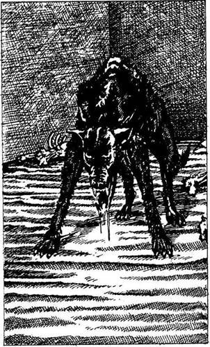
128.
Az ajtó egy üres szobába nyílik, amelyben csupán egy halom csontot látsz az egyik sarokban. Karmolás nyomait fedezed fel a falakon. Egy lyukból morgást hallasz. Hirtelen kinyílik a mögötted lévő ajtó, és valaki húsos csontokat hajít be a szobába, majd az ajtó ismét becsukódik. A morgás hangos ugatásba csap át, és ekkor hirtelen egy nyálát csorgató Halálkutya ugrik eléd. Azonnal rád támad.
Halálkutya ÜGYESSÉG 9 ÉLETERŐ 10
Ha legyőzöd - lapozz a 378-ra.
129.
Amikor végre elül a homokvihar, csillogó tárgyat pillantasz meg a homokban. Csak az egyik csücske áll ki a homokból. Meghúzod, és egy rézcsengettyűt látsz. Beteszed a hátizsákodba, és továbbmész keletnek. Lapozz a 26-ra.

130.
Hangos csobbanással zuhansz a vízbe. Már rég elvesztetted az eszméletedet, mire a húsod megpuhul és leválik a csontjaidról. A víz mintha tömény savvá vált volna a Csápos Szörny vérétől. Kalandod itt véget ér!
131.
Amikor a folyosón az aranyeső mögül erős zajt hallasz, felpattansz. A függöny mögött egy ajtó van, de be van zárva, és nincs időd kinyitni. Ha el akarsz bújni a függöny mögött - lapozz a 44-re. Ha vállalod, hogy találkozz azzal, aki bejön a szobába, bárki legyen is az, lapozz a 227-re.

132.
Az alászálló Pterodactylus nem könnyű ellenfél. Pontosan célzol, mielőtt kirepítenéd a nyiladat. Dobj két kockával, és a kapott összeghez adj hozzá 3-at. Ha a kapott összeg ugyanannyi vagy kevesebb, mint ÜGYESSÉG pontjaid száma - lapozz a 104-re. Ha a kapott összeg nagyobb, mint ÜGYESSÉG pontjaid száma - lapozz a 254-re.
133.
Éles, maró szag tölti be a levegőt, amikor a Vasevőnek nevezett kocsonyaszerű teremtmény nekiáll, és majszolni kezdi a sisakodat. A földre dobod a sisakot, és visszarohansz, fölszáguldasz a lépcsőn, még mielőtt a kardodat is megenné a lény. Szerencsédre a Vasevőt nem érdekli az emberi hús. Vesztesz 1 ÜGYESSÉG pontot, amiért megfosztottak a sisakodtól. Visszamész az üres szobába, és egy másik ajtóval próbálkozol. Lapozz a 307-re.

134.
Pontosan tudod, milyen veszélyben forog az életed. Becsukod a szemedet, és kardoddal támadsz rá a Baziliszkuszra. De ez a lény más, természetes fegyverrel is rendelkezik - s ez nem más, mint mérgező lehelete! Mivel nem láthatod, merre menekülj, a vadállat könnyű zsákmánya leszel. Csakhamar holtan fekszel arccal a homokban.

135.
Éppen az ajtó zárjával bajlódsz, amikor a kristálykulcs leesik a kezedből a földre. Apró darabokra törik, és ekkor már tudod; hogy minden elveszett. A mennyezet könyörtelenül közeledik a padlóhoz, és csontjaid fájdalmasan szétroppannak. Kalandod itt véget ér.
136.
Yaztromo közli veled, hogy a Varázsnyíl varázslattal egy nyílvessző pattan ki az ujjbegyedből, és halálos pontossággal csapódik bele bármilyen megadott célpontba. Megtanítja neked a varázsigét, melyet ilyenkor kell elmondanod, és azt is hozzáteszi, hogy ez a varázslat nem veszi majd túlzottan igénybe az energiádat; csupán 2 ÉLETERŐ pontot vesztesz minden esetben, ha alkalmazod. Lapozz vissza 34-re, de előbb jegyezd fel ezt a varázslatot a KALANDLAPODRA, és jelöld a 2 ÉLETERŐ pont veszteséget is.
137.
Az ajtó egy előcsarnokba nyílik. Látod, amint Leesha a túloldalon kimegy egy másik ajtón. Az előcsarnokban egy kutyát ábrázoló bronz istenszobor áll. Ha megállsz és megvizsgálod az istenszobrot - lapozz a 186-ra. Ha inkább Leesha után mész - lapozz a 47-re.

138.
Előveszed a sárgaréz távcsövet a hátizsákodból, és meglengeted a Gnóm előtt, hogy ingereld egy kicsit. Az örömében kuncogva összedörzsöli két tenyerét. Elrúgja az útból a szőnyeget, és megemeli az egyik utcakőhöz erősített rejtett vaskarikát. A kő felnyílik, és egy kis kamra válik láthatóvá; dugig van olyan tárgyakkal, melyeket a Gnóm hosszú évek alatt halmozott fel. Átkutatod a kamrát, és nem akarsz hinni a szemednek, amikor egy kis Kristálysárkány akad a kezedbe. Ez az egyik szobor azok közül, amelyeket keresel. Elteszed, és odaadod a távcsövet a Gnómnak. Búcsút mondasz neki, és lemászol a létrán a folyosóra, amelyen visszamész az utolsó elágazáshoz. Lapozz a 262-re.
139.
Ha tudod a Csapdafelderítő varázslatot - lapozz a 197-re. Ha nem ismered ezt a varázslatot - lapozz a 179-re.

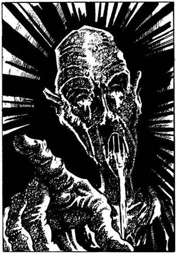
140.
Amint lefelé mész a folyosón, valami lágyan megérinti válladat. Megfordulsz, és ekkor egy szörnyűséges, ijesztő teremtményt pillantasz meg. Vézna testét rongyok borítják. Szemürege és szája sűrű váladékkal van tele, és ettől bugyborékolva szól a hangja. - Halál! - kiáltja a Halál Küldönce, majd eltűnik, de ki tudja, miért‚ mégis tudod, mi történt. A Halál Küldönce szadista gyilkos, aki játékot űz áldozataival. Amint előtted jár, mindig máshol helyezi el a „HALÁL” szó egy-egy betűjét. Ha netán utad során elolvasod a „halál” szó összes betűjét- a Halál Küldönce visszatér hozzád, hogy gyönyörködjön elmúlásodban. Malbordus bérgyilkosa kellemetlen fordulatot jelent a szobrok utáni kutatásban. Lapozz a 330-ra.
141.
Leveszed a rézkulcsokat a Kínzómester övéről, és az egyikkel ki tudod nyitni a fogoly bilincsét. Az először fél tőled, attól tart, hogy csupán trükkről van szó, de fokozatosan meggyőzöd róla, hogy nincs szándékodban bántani őt. Megtudod, hogy a neve Thitta, egykor Leesha Főpapnő szolgája volt, és akkor kapták el, amikor meg akart szökni Vatosból. Megkérdi tőled, mit keresel itt Vatos labirintusában. Beszámolsz neki Malbordusról, a küldetésedről és a Halál Küldöncéről. Tágra nyílt szemmel így szól: - Egy köpenyes alakot láttam, aki a szemem előtt öltött testet a kincstárszobában, ahol elrejtőztem, mielőtt elkaptak. Csak az arcát láttam egy pillanatra, de az rettenetes volt. Valamit beletett egy aranyládikóba, majd ismét eltűnt. - Felajánlod Thittának, hogy legyen a társad küldetésed során, de udvariasan visszautasít,
mondván, hogy ismét meg kell próbálkoznia a szökéssel. Sok szerencsét kívánva elbúcsúzol tőle. Együtt hagyjátok el a szobát, de külön folytatjátok az utatokat. Lapozz a 66-ra.
142.
Amint közelebb érsz, látod, hogy a fák egy kis tavat vesznek körül. Oázisra találtál. Ha inni akarsz a tó vizéből - lapozz a 337-re. Ha nem iszol, hanem inkább folytatod az utadat déli irányba - lapozz a 207-re.
143.
Ha a drágaköveket megérinted, tapasztalod, hogy tűzforróak, szinte vörösen izzanak, de hanem nyúlsz hozzájuk, nem melegítenek. Tedd próbára a SZERENCSÉDET! Ha SZERENCSÉD van - lapozz a 252-re. Ha nincs SZERENCSÉD - lapozz a 338-ra.
144.
Úgy érzed, mintha időtlen időkig a levegőben csüngenél, amikor hirtelen a gödör túloldalán landolsz. Nem vesztegeted az idődet, hanem egyenesen továbbmész. Lapozz a 152-re.
145.
A villám elszáguld a fejed fölött, és végigperzseli a falat a hátad mögött. Mit veszel elő a hátizsákodból?
Egy kis Rézcsengettyűt? Lapozz a 198-ra.
A Homokhernyó egyik fogát? Lapozz a 331-re.
Egy Tükröt? Lapozz a 22-re.
146.
Azt mondod a kapitánynak, hogy 2 Aranytallérnál többet nem tudsz neki adni. Megvetéssel fogadja ajánlatodat, de néhány perces alkudozás után megegyeztek 3 Aranytallérban. Kezet rázol a kapitánnyal, és kimész a kabinból. Lapozz a 102-re.
147.
A jeleket nem tudod elolvasni, ezért úgy döntesz, hogy inkább kinyomozod, ki vágta hozzád a palackot. Lapozz a 77-re.
148.
Egy rongyos ruhába öltözött vézna alak jelenik meg hirtelen előtted. Gyengeség vesz erőt rajtad, és térdre rogysz; érzed, hogy a Halál Küldönce milyen nagy élvezetet talál halálodban. Már nincs rá módod, hogy megsemmisítsd a Sárkányszobrocskákat, és Malbordus győzedelmeskedik feletted! Küldetésedet nem tudtad teljesíteni, megbuktál.
149.
A küzdelemnek vége; mindkét karodat körülfonják a Homoki Csattogó csápjai. Lassan nagyra tátott szájához emel, és megesz. Kalandod itt véget ér!
150.
A mennyezet gyorsan süllyed, és előre kell görnyedned, miközben megpróbálod beleilleszteni a kristálykulcsot a zárba. Tedd próbára a SZERENCSÉDET! Ha SZERENCSÉD van - lapozz a 209-re. Ha nincs SZERENCSÉD - lapozz a 135-re.
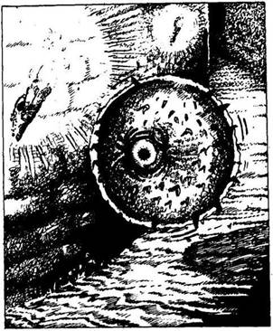
151.
Alig teszel néhány lépést a parton, amikor a homokban több száz porceláncsigából kirakott különös alakzatot veszel észre. A csigák közepéről tengeri madártollakkal díszített lándzsa áll ki. Mit teszel?
Továbbmész a parton? Lapozz a 6-ra.
Kelet felé mész a sivatag
belsejébe? Lapozz a 327-re.
Írásjel varázslatot alkalmazol (ha
képes vagy rá)? Lapozz a 94-re.
152.
A fáklyákkal megvilágított folyosón egy szörnyűséges teremtményt látsz a félhomályban. A levegőben keringve elzárja az utadat. A teremtmény golyó alakú, sötétzöld, pikkelyes teste közepén egy nagy szem ül. A Tüskés Szem feléd úszik, megpróbál megbabonázni hipnotikus tekintetével, és igyekszik beléd szúrni a tüskéit. Ha karddal akarsz megvívni a gyilkossal - lapozz a 236-ra. Ha inkább átkutatod a hátizsákodat, hátha találsz valami használhatóbb fegyvert - lapozz a 387-re.
153.
Az ajtó egy szobába nyílik, amelyet a falakon elhelyezett fáklyák világítanak meg. Ha át akarsz vágni a poros padlón a szemközti falban lévő boltíves átjáróhoz - lapozz a 261-re. Ha inkább továbbmész a folyosón, a villódzó fények felé - lapozz a 339-re.
154.
- Csalódtam benned, harcos - folytatja a beszélő fej. Jobbra számítottam. - Zöld füst árad ki a száján, és pánikba esel. Mielőtt az ajtóhoz érnél, a füst már az arcod körül gomolyog, és teljesen elveszted a tájékozódóképességedet. Vesztesz 3 ÜGYESSÉG 5 4 SZERENCSE pontot! Amikor végre kezd eloszlani a füst, a bronzfej ismét mozdulatlanná válik és elnémul. Kimész a szobából, és elindulsz fölfelé a folyosón. Lapozz a 17-re.

155.
A skorpiót széttaposod a csizmáddal, és tovább görgeted a sziklákat. A sziklák között egy kis fehér vászonzsákot találsz. Belsejében gömbölyű tárgyat tapintasz ki. Ha ki akarod nyitni a zsákot - lapozz a 349-re. Ha nem nyitod ki a zsák száját, hanem otthagyod a sziklák között és tovább folytatod az utadat délnek - lapozz a 39-re.
156.
Az edényben egy összeaszott mancsot találsz, amely akár egy majomé is lehet. Mit teszel?
Elteszed a mancsot? Lapozz a 318-ra.
Fölemeled a fehér fazék tetejét? Lapozz a 14-re.
Fölemeled a piros fazék tetejét? Lapoz a 183-ra.
Átmész a termen a boltíves
átjáróhoz? Lapozz a 20-ra.
157.
A folyosó csakhamar egy T elágazásban ér véget. Ha balra akarsz továbbmenni - lapozz a 175-re. Ha inkább jobbra akarsz továbbmenni - lapozz a 353-ra.
158.
Összeszorítod a fogadat, és kihúzod a nyílvesszőt a válladból. A fájdalomtól szenvedve vonszolod végig magad a folyosón, míg egy piszkos, elhanyagolt szobába jutsz, amelynek a falait fáklyák világítják meg. Lapozz a 43-ra.

159.
Az idő előrehaladtával egyre messzebbre jutsz a cserjés sík vidéken. Amikor már túl sötét van ahhoz, hogy folytasd utadat, elrejtőzöl egy sziklabarlangban. Dobj egy kockával! Ha 1-et dobsz - lapozz a 398-ra. Ha bármi mást dobsz - lapozz a 15-re.

160.
A szemközti falon hosszú ablaksor húzódik végig. Az egyik ablak nyitva van. Mennydörgést hallasz, és odamész az egyik ablakhoz, hogy kinézz. A nagy fényesség bántja a szemedet. Bár süt a nap, most hirtelen sötét folt takarja el. Hatalmas, fekete Sárkány köröz a fejed felett; hátán gonosz tekintetű ember ül. A Sárkány felordít, és ekkor meghallod Malbordus rosszindulatú nevetését. A Sárkány észak felé röpül veled, és képtelen vagy megállítani. Malbordus káoszseregének élén bevonul majd Allansiába, és a világra mély sötétség borul. Küldetésed nem járt sikerrel, megbuktál!

161.
A falfestmény legalább húsz méter hosszú, és egy csatajelenet látható rajta; gaz Orkok korbáccsal ösztönöznek harcra Élőholtakat, akik éppen emberek és Törpék seregét verik vissza. Az Élőholtak vezérének testét fekete palást rejti, hús nélküli, hüllőszerű arca viszont jól látható. Hideg, gonosz zöld szeme fenyegetőn tekint le rád a festményről. Egy ládikót tart a kezében, amely épp beszippantja a csatát vesztett emberek és Törpék királyának a lelkét. Elbűvöl a ládán lévő festmény, és csodálattal szemléled. - Tetszik a művem? - teszi fel valaki
a kérdést hirtelen a hátad mögött. Megfordulsz, és egy férfit látsz, aki nyugodtan áll mögötted, festékes tállal kezében, füle mögé dugott ecsettel. Mosolyog, és úgy tűnik, mintha örülne érdeklődésednek. Mit teszel?
Megtámadod? Lapozz a 123-ra.
Válaszolsz a kérdéseire? Lapozz a 296-ra.
Elmész mellette, és tovább folytatod
utadat? Lapozz a 376-ra.
162.
A csupasz folyosó élesen balra kanyarodik. Körülbelül tizenöt méter megtétele után egy páncélkesztyűt találsz a földön. Ha fel akarod húzni a kesztyűt a kardforgató kezedre - lapozz a 201-re. Ha inkább átléped és továbbmész - lapozz az 56-ra.
163.
Nem történik veled semmi, amikor a medált a nyakadba teszed, de nem tudod, hogy ezt a medált a kiszemelt áldozatok nyakába szokták akasztani. Vesztesz 1 SZERENCSE pontot! Mivel itt semmi más érdekeset nem találsz, visszamész a szobába, amelyben utoljára voltál, és kinyitod a külső ajtót. Lapozz a 298-ra.

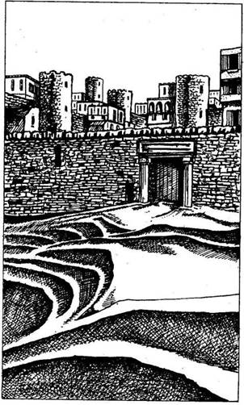
164.
A rekkenő hőségben magad elé bámulva, alig ötszáz méternyire magas kőfalat veszel észre. Különböző alakú kőtornyok és háztetők emelkednek ki mögüle. Amint közelebb érsz, látod, hogy a szélfútta homok teljesen elbarikádozta a bejárathoz vezető utat, s a bejárati ajtót is elzárja. - Vatos! - kiáltja lelked mélyén egy hang. Ha megpróbálod kinyitni a bejárati ajtó mellett lévő kis oldalajtót - lapozz a 382-re. Ha tudsz és akarsz is, Ugrás varázslatot alkalmazhatsz - lapozz az 54-re.
165.
A víz vértől piroslik. Éppen ki akarsz mászni a kiugróra, amikor a víz színe hirtelen feketére változik, és maró gőzök csapnak fel belőle. Ha megállsz a kiugrón, és megvárod, mi történik - lapozz az 52-re. Ha inkább továbbmész az alagútban - lapozz a 91-re.
166.
A tömeg hagyja, hogy levedd a halott Kalóz nyakából a bőrerszényt. Otthagyod a zúgó tömeget, felmész a lépcsőn a szobádba, és bezárkózol. Kinyitod az erszényt, és 2 Aranytallért találsz benne. Lefekszel aludni, de csak hánykolódsz, és kora hajnalban fáradtan ébredsz. Undorral veszed észre, hogy tested tele van vörös poloskacsípéssel. Nem vesztegeted tovább az időt a Fekete Homárban, gyorsan lemész a partra a mólóhoz, ahol megpillantod a Belladonnát, de zászlóján egy koponyát és két lábszárcsontot látsz - a Belladona kalózhajó! Óvatosan felmész a hajóhídon, és máris a hajó fedélzetén állsz. Lapozz a 238-ra.
167.
Tested megremeg, amikor a bot végéből cikázó villám csap ki és szétzúzza a zárat. Azonban ez a fegyver Sajnos nem halandók számára készült, és Így viselned kell a következményeket. Vesztesz 1 ÜGYESSÉG és 2 ÉLETERŐ pontot! Ledobod a földre a botot, és kimész a nyitott ajtón át a másik szobába. Lapozz a 2-re.
168.
Átléped a földbe temetett Tűlegyeket, és továbbmész. Félórás kitartó gyaloglás után egy köpenybe öltözött emberbe botlasz, aki arccal a homokban fekszik. Ha meg akarsz állni, hogy megnézd, mi van a bőrerszényben, amit a halott az egyik kezében szorongat - lapozz a. 107-re. Ha inkább továbbmész - lapozz a 10-re.
169.
Lassan megnyomod a másik gombot, és ekkor újabb villám csap ki a botból. Ezúttal belevág az ajtóba, és szétveti a zárat. Tested másodszor is megremeg, és rájössz, hogy ez a fegyver nem halandók számára készült. Vesztesz 1 ÜGYESSÉG és 2 ÉLETERŐ pontot! Eldobod a botot, és a nyitott ajtón bemész a másik szobába. Lapozz a 2-re.
170.
Merészen elhúzod a függönyt. Attól tartasz, hogy ott a „halál” szó egyik betűje vár rád, de csak egy vasajtót találsz, amely kinyílik, amikor lenyomod a kilincset. Mit teszel?
Kinyitod az ajtót? Lapozz a 365-re.
Balra mész a folyosón? Lapozz a 335-re.
Jobbra mész a folyosón? Lapozz a 162-re.
171.
Odarohansz a Törpéhez, és megtudod tőle, hogy ő Kőhidafalva küldötte, akit Yaztromo bízott meg. Ő hozta el neked Kőhidafalváról a híres harci kalapácsot, amellyel szét lehet zúzni a Sárkányszobrocskákat. Csak ez a fegyver alkalmas rá, semmi más. A Törpe azt is elmondja, hogy egy Varázsló figyelmeztette: a katakombák bejáratához legközelebb álló Sárkányszobrot kell elsőnek szétzúzni. A Törpe nyelve akadozni kezd, egyre nehezebben beszél, míg végül elterül a földön. Nem tehetsz már semmit a bátor Törpéért, de ha lehet, még eltökéltebben vágyódsz rá, hogy küldetésedet siker koronázza. Megmarkolod a legendás harci kalapácsot, és az átjárón lerohansz a vasajtóhoz, amelyen át Leesha eltűnt a szemed elől. Lapozz a 314-re.
172.
A Gólem a földre zuhan, és apró darabokra törik. Átléped a köveket, és az alagút bejárata felé indulsz. Lapozz a 74-re.
173.
A kapitány nevetve mondja: - Nem igaz! Vigyétek, korbácsoljátok meg, és vessétek a tengerbe! - Megragadnak, és szembe kell nézned a sorsoddal. Kalandod itt véget ér!
174.
Torkodszakadtából ordítani kezdesz, hogy túlharsogd a bűvös éneket, s közben kardot rántasz, hogy megtámadd a Fekete Apostolokat. Lapozz a 188-ra.
175.
Addig mész a folyosón, amíg az élesen jobbra kanyarodik. Amikor befordulsz a sarkon, egy magas, hüllőszerű teremtményt pillantasz meg; páncélt visel, és egy görbe kard van a kezében. Úgy látod, hogy a Gyíkember a fal mellett feltornyozott zsákokat őrzi. Ha tudsz és akarsz, Teremtményaltató varázslatot alkalmazhatsz - lapozz a 232-re. Ha inkább a kardoddal támadsz rá a teremtményre - lapozz a 7-re.
176.
Egy újabb halom zuhan le a mennyezetről, és a fejeden landol. Ha sisak van a fejeden - lapozz a 133-ra. Ha nincs sisak a fejeden - lapozz a 30-ra.
177.
Elrebeged a Tűzvarázslat varázsigéjét, és akkora tüzet varázsolsz, amelynél meg tudsz melegedni. Vesztesz 1 ÉLETERŐ pontot a varázslásért! Korán reggel folytatod az utadat a sivatagban. Lapozz a 72-re.
178.
A választott módszerrel kinyitod az ajtót (ha varázslattal tetted, vonj le magadtól 2 ÉLETERŐ pontot!), és belépsz egy másik szobába. Visszadobod az ajtónyíláson az ezüstbotot, s ekkor hatalmas reccsenést hallasz - a mennyezet ismét ereszkedni kezd. Tudod, hogy már nem kell tartanod attól, hogy hátulról megtámad valaki, így körülnézel a szobában, amelybe most kerültél. Lapozz a 2-re.

179.
Nem tudod, hogy az előtted lévő ajtó csupán káprázat; valójában egy gödör van a helyén, és amikor azt hiszed, hogy az ajtón lépsz be, legalább tíz métert zuhansz a mélybe. Dobj egy kockával, és a kapott számot vond le ÉLETERŐ pontjaidból. Ha még mindig életben vagy - lapozz a 25-re.

180.
Az öreg varázsló ünnepélyesen rád néz, és így szól: - Most minden perc drága: azonnal útra kell kelned! Nincs kétségem afelől, hogy Malbordus tudomást fog szerezni küldetésedről, és egy-két bérgyilkost utánad küld. Varjam elkísér egészen a Macskahal folyóig. Ott aztán vagy hajóra szállsz és elmész Feketehomok kikötőig, ahonnan vitorlás hajóval folytatod az utat délre, vagy a szárazföldön mész el a Koponyák Sivatagáig. Szörnyű nehéz feladat előtt állsz, de gondolatban veled leszek. - Yaztromo ezek után levezet a csigalépcsőn, és kiléptek a szabadba. Váratlanul éleset füttyent: szinte azonnal egy hatalmas varjú röppen fel a torony tetejéről, és Yaztromo vállára száll. - Kedves varjam - szólal meg Yaztromo - vezesd el a barátunkat a Macskahal folyóig, de vigyázz, légy résen! Nehogy tőrbe csaljanak, az nem lenne jó! - Kezet rázol Yaztromóval, és biztosítod róla, hogy végzel Vatos Sárkányaival, mielőtt Malbordus elérné gonosz célját. Elmosolyodik, és átnyújt neked egy erszényt, melyben 25 Aranytallér lapul. Ekkor Yaztromo megparancsolja a varjúnak, hogy repüljön délre. A varjú elkárogja magát, és felröppen. Gyorsan utánaeredsz, de még sietve búcsút intesz öreg barátodnak. Miközben a hatalmasra nőtt fűben követed a varjút, szinte beleborzongsz a gondolatba, hogy Malbordus bérgyilkosai esetleg a nyomodban vannak. Egyenesen haladtok dél felé, csupán kétszer tértek le az útról, hogy elkerüljétek a veszélyt, amelyre a varjú lesz figyelmes. Három óra múlva elértek a Macskahal folyó partjára, oda, ahol egy függőhíd ível át a vízen. A híd tövében, egy dereglye várakozik a mólóhoz kikötve, és
számos rossz arcú pasas zsákokat rak ki belőle. Ha át akarsz menni a hídon - lapozz a 23-ra. Ha fizetség ellenében a bárkán akarsz áthajózni Feketehomok kikötőbe - lapozz a 213-ra.

181.
A művész nevetve így szól: - Sose vártam volna elismerést ezen a gonosz helyen! Nem kétséges, hogy Leesha Főpapnő hatalmas vagyona csábított ide. A hírnevemet teszem rá. Valószínűleg nem hallottad, hogy Leesha kegyetlen, könyörtelen módszerei ellenére is nagy művészetkedvelő. Minden évben művészeket hív meg nagy titokban, hogy bemutassák alkotásaikat az elveszett városban. Majd mindenhol faliszőnyegeket, fafaragványokat, rézkarcokat látsz a folyosó mentén. Ő egymaga dönt a műalkotások sorsáról, és ítélete megfellebbezhetetlen. A győztes 300 Aranytallért kap, a veszteseket pedig feláldozzák a Nagy Sötétnek. Tán mondanom sem kell, hogy én fogok győzni. Mindannyiunknak ad egy varázsgyűrűt, amely megvéd bennünket, míg dolgozunk. A nevem Murkegg, és örülök, hogy megismertelek. - Megkérdezed tőle, nem hallott-e egy Malbordus nevű férfiról, de ő csak tagadólag rázza a fejét. Elmondod neki, milyen fontos, hogy megtaláld Malbordust, és megkérdezed, ismeri-e az alagút- és folyosórendszert. Murkegg megvakarja az állát,
és így felel: - Attól tartok, nem tudok neked túl sokat segíteni, mert időm legnagyobb részét festéssel töltöm. Azt azonban tudom, hogy Leesha belső templomát csupán az aranyeső függönyön át lehet megközelíteni. Akit te keresel, az talán épp Leeshánál vendégeskedik. Nem tehetek mást érted, csupán szerencsét kívánhatok neked. - Kezet rázol vele, és továbbmész a folyosón. Lapozz a 376-ra.
182.
Kardod mélyen belefúródik halálos ellenséged szemébe‚ és az a földre zuhan. Undorító sárga folyadék buggyan ki a szeméből, amely szétmarja a kőpadlót és mérgező gázokkal tölti meg a levegőt. Lélegzetedet visszafojtva rohansz el a döglődő Tüskés Szem mellett. Lapozz a 340-re.

183.
A fazék üres, de a szerencse ezúttal nem kedvez neked. A fedő alján egy nagy A betűt látsz, melyet a Halál Küldönce irt oda szénnel. Vesztesz 4 ÉLETERŐ és 1 SZERENCSE pontot! A fedőt a földhöz vágod, de már késő. Mit teszel?
Felemeled a fehér fazék fedelét? Lapozz a 14-re.
Felemeled a fekete fazék
fedelét? Lapozz a 156-ra.
Átvágsz a kamrán a szemközti falból nyíló
boltíves átjáróhoz? Lapozz a 20-ra.
184.
Kimondod Yaztromo varázsigéjét, és abban a percben egy csillogó nyílvessző pattan ki az egyik ujjbegyedből. A nyílvessző elszáll, és mélyen belefúródik a repülő Hárpia mellébe. Azonnal megöli. A madár teste nagy puffanással csapódik a földhöz. Vonj le magadtól 2 ÉLETERŐ pontot a varázslásért. Éberen figyelsz, hátha felbukkan még valamilyen ellenséges teremtmény, de közben továbbmész délnek. Lapozz a 86-ra.
185.
A Fantom elkapja a gyöngyöt a levegőben. Megpróbálod megölni, de a Fantom kineveti szánalmas igyekezetedet, és szabad kezével elkapja a karodat; azonnal megbénulsz. Vesztesz 4 ÉLETERŐ pontot! Mire újra érezni kezded a végtagjaidat, a Fantom már messze jár. Merev lábakkal folytatod utadat a folyosón. Lapozz a 190-re.

186.
Észreveszed, hogy a bálvány szája csapószerkezettel záródik; rájössz, hogy akkor nyílik ki az alsó állkapocs, ha meghúzod a bal fülét. A kutya szájában egy szobrocskát találsz - a régóta keresett Aranysárkányt. Gyorsan zsebre vágod, és Leesha nyomába eredsz. Lapozz a 47-re.
187.
Amikor a hajó süllyedni kezd, a legénység az ágyúk mellől a falépcső felé rohan, amely a fönti fedélzetre vezet. Az őrült zűrzavarban valaki jól kupán vág egy furkósbottal. Eszméletlenül vágódsz végig a fedélzeten, és a süllyedő hajóval együtt merülsz a víz alá.
188.
A Fekete Apostolok harsány üvöltéssel rontanak rád. Küzdj meg velük egyenként.
ÜGYESSÉG ÉLETERŐ
Első Fekete Apostol 9 5
Második Fekete Apostol 8 6
Harmadik Fekete Apostol 9 5
Ha legyőzöd - lapozz a 41-re.
189.
Tudod, hogy a Baziliszkusz egyetlen pillantása végez veled, ezért csukott szemmel elsuttogod a Tűzvarázslat varázsigéjét. Hirtelen tűzfal vesz körül, és mindaddig égnek a lángok, amíg a Baziliszkusz meg nem unja a várakozást és el nem megy. A varázslás 2 ÉLETERŐ pontodba került. Csak akkor hagyod, hogy a lángok elaludjanak, amikor meggyőződsz róla, hogy a Baziliszkusz már messze jár. Ekkor továbbmész. Lapozz a 108-ra.
190.
A folyosó egy T elágazásban ér véget. Úgy látod, a keresztutat gyakrabban használják. A falakat freskók és faliszőnyegek díszítik, és szabályos közönként elhelyezett fáklyák biztosítják a fényt. Ha balra akarsz fordulni a freskók irányába - lapozz a 161-re. Ha jobbra mész, a faliszőnyegek felé - lapozz a 40-re.
191.
Amikor a folyosó végére érsz, akkor jössz rá, hogy amit láttál, nem csillogó függöny, hanem aranyeső, amely a mennyezeten lévő lyukakból zuhog alá a padlón lévő sekély vályúba. A folyosó, ahol az aranyeső alázúdul, balra kanyarodik, majd onnan egyenesen megy tovább, ameddig a szem ellát. Ha tovább akarsz menni a folyosón - lapozz a 249-re. Ha átmész az aranyesőn - lapozz a 354-re.
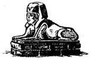
192.
Egyre csak mész, de már alig vonszolod magad a szomjúságtól. Vesztesz 4 ÉLETERŐ pontot! Már csak az tart életben, hogy legyőzöd Malbordust. Lapozz a 377-re.
193.
Kardot rántasz, és markolatával rávágsz a Sárkányra. A szobor azonban sértetlen marad. Óriási hibát követtél el azzal, hogy a kardodat használtad. Izmaid kezdenek megmerevedni, bőröd a csontjaidra feszül. Lassan egész tested kővé dermed, s már nem vagy más, csupán egy kőszobor. Kalandod itt véget ér.
194.
Yaztromo közli veled, hogy a Nyelv varázslattal képes leszel bármely teremtmény beszédét megérteni, ha mégoly idegen is az számodra. Megtanítja neked a varázsigét, és azt is megtudod, hogy alkalmazásakor csupán 1 ÉLETERŐ pontot vesztesz. Lapozz vissza a 34-re, de előbb jegyezd fel ezt a varázslatot a KALANDLAPODRA és jelöld az 1 ÉLETERŐ pont veszteséget.
195.
A varázslatra összpontosítasz, s közben igyekszel nem meghallani az énekhangokat. Erőfeszítésed
1 ÉLETERŐ pontodba kerül, de végül te győzöl - a három palástos figura a földre zuhan, és azonnal elalszik. Nem vesztegeted tovább az időt, és továbbmész az oltár mögött lévő falból nyíló boltíves átjáróhoz. Lapozz a 341-re.

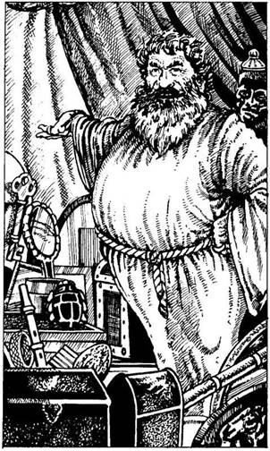
196.
Amikor már csak tíz méterre vagy a sátortól, hirtelen fellebben a sátorlap és egy dagadt, szakállas férfi jelenik meg sárga köntösben, ujján díszes aranygyűrűkkel. Nem akar megfenyegetni téged, inkább behív a sátrába. - Idegen - mondja -, úgy látom, elfáradtál. Légy a vendégem! Talán még arra is rábeszéllek, hogy vegyél meg tőlem néhány egzotikus portékát. - Mivel nem látsz semmiféle rád leselkedő veszélyt, belépsz a sátorba, és lekuporodsz egy szőnyegre. A nomád, aki, mint megtudod, az Abjul névre hallgat, étellel-itallal kínál. Erőre kapsz. Nyersz 4 ÉLETERŐ pontot! Abjul később nevetve mondja: - Nos, mit vennél meg tőlem, barátom? - Nagy elragadtatással beszél minden egyes árujáról. Ezek a következők:
Pecsétviasz 2 Aranytallér
Ónixtojás 3 Aranytallér
Elefántcsont bogártalizmán 2 Aranytallér
Sellőpikkely karkötő 3 Aranytallér
Ezüsttükör 4 Aranytallér
Kristálykulcs 3 Aranytallér
Ébenfa maszk 3 Aranytallér
Csontfurulya 2 Aranytallér
Ha akarsz és tudsz is venni valamit Abjultól, jelöld a KALANDLAPODON. Abjul elmondja neked, hogy szerinte Vatos a Koponyák Sivatagának déli csücskében van; erre úgy döntesz, hogy abba az irányba fogsz menni. Megköszönöd a segítségét, és elindulsz délnek. Lapozz a 389-re.
197.
Egy belső hang azt súgja neked, hogy mondd ki a varázsigét (vonj le magadtól 2 ÉLETERŐ pontot!). Hirtelen észreveszed, hogy a boltív csupán illúzió, amely egy gödröt álcáz közvetlenül a fal mellett. Kideríted, hogy a másik boltív viszont valódi, és át is mész alatta. Lapozz a 315-re.
198.
Becsöngetsz, és örömmel látod, hogy az Éjszaka Réme eldobja botját, majd megpróbálja formátlan mancsaival befogni a fülét. Felordít haláltusájában, majd a földre zuhan. Örömöd azonban rövid életű, mert a fejed fölül recsegést hallasz. Az ezüstbot, amint kiesik tulajdonosa kezéből, valamilyen mágikus erő hatására egy szerkezetet hoz működésbe a mennyezeten, és az fokozatosan rád ereszkedik. Odarohansz, hogy kinyisd valamelyik ajtót, de mindkettő be van zárva, és képtelenség kinyitni, még Yaztromo varázslata sem segít. Mit teszel?
Felkapod az ezüstbotot? Lapozz a 290-re.
Megpróbálkozol a kristálykulccsal (ha
van nálad ilyen)? Lapozz a 150-re.
Megpróbálsz egy lyukat égetni az ajtóba a Tűz
varázslattal (ha ismered azt)? Lapozz a 239-re.
199.
Amikor belenyúlsz a hátizsákodba, hogy előhalássz le egy újabb nyílvesszőt, a sas meredeken az ég felé és elállja a Pterodactylus útját. Megmarkolod a tollait, hogy le ne ess a hátáról, s ekkor elejted a nyilat. Látod, amint az lezuhan a magasból, és most már nincs más hátra, minthogy megvárd az éppen elkezdődött csata kimenetelét. Lapozz a 311-re.

200.
Nem találsz semmilyen alkalmas tárgyat, amellyel megsemmisíthetnéd a Tüskés Szemet, ezért a kardod mellett döntesz. Sebesen előrántod. Lapozz a 236-ra.
201.
Nem tudod, hogy a páncélkesztyű meg van átkozva, és csökkenti kézügyességedet. Vesztesz 1 ÜGYESSÉG pontot! Ráadásul fogyatékosságodnak nem vagy tudatában, amikor folytatod az utat. Lapozz az 56-ra.
202.
Menet közben hirtelen gyógyfüvek émelyítő illatát érezed a levegőben. Az illat egyre erősebbé válik, ahogy közeledsz a folyosó végéhez, ahol félhold alakú úszómedencét látsz. A falon réztábla díszeleg, melyen furcsa jeleket látsz. 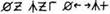 Mit teszel?
Írásjelolvasó varázslatot alkalmazol
(ha képes vagy rá)? Lapozz a 37-re.
Kortyolsz egy keveset a
gyógyfűitalból? Lapozz a 100-ra.
Sebeidet lemosod a
gyógyfűfőzettel? Lapozz a 269-re.
Visszamész a folyosón? Lapozz a 364-re.
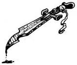
203.
- Majd én megmutatom neked, ki az ügyetlen! - förmed rád a dühös férfi, és hozzád vágja a söröskupát. Vesztesz 2 ÉLETERŐ pontot! Ha meg akarsz verekedni a férfival - lapozz a 45-re. Ha dühödet inkább Malbordusnak tartogatod és visszavonulsz a szobádba - lapozz a 251-re.
204.
A földön heverő kis szobor ártalmatlannak látszik, de gyanítod, hogy szétzúzása nem lesz egyszerű. Ha van nálad harci kalapács - lapozz, a 9-re. Ha nincs nálad ilyen fegyver - lapozz a 193-ra.
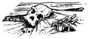
205.
Nemsokára egy férfi holttestre bukkansz, mely arccal a homokban fekszik. Vérnyomokat nem találsz, és támadás nyomát sem látod rajta, a férfi mégis halott, pedig egy félig telt vizespalack is van nála. Arcán haláltusa jelei láthatók, mintha valami iszonyú látványban lett volna része. Nincs semmi a férfinál, aminek hasznát vehetnéd, kivéve a vizespalackot, amit beteszel a hátizsákodba, és továbbmész délnek. Lapozz a 303-ra.
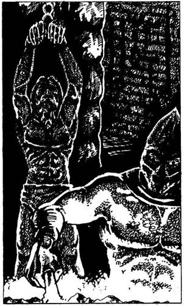
206.
Az ajtó egy szobába nyílik, amely dugig van különféle kínzóeszközökkel. Odabent egy férfi ordít, akit csuklójánál fogva akasztottak föl a mennyezetre erősített lánchoz, kínzója pedig egy csuklyás, meztelen felsőtestű férfi, aki füstölgő, tűzforró vasat tart a kezében, harsányan nevet. Ha segíteni akarsz a szerencsétlen fogolynak - lapozz a 328-ra. Ha inkább kínzójának kegyére bízod és továbbmész a folyosón - lapozz a 66-ra.
207.
Hirtelen megbotlasz egy hatalmas kőkupacban, amelyet a szélfútta homok takart el a szemed elől. Ha meg akarod nézni a köveket - lapozz a 375-re. Ha inkább elmész mellettük - lapozz a 39-re.
208.
Amint kimondod a varázsigét (vonj le magadtól 1 ÉLETERŐ pontot!), a jelek azonnal olvashatóvá válnak. Túl későn jössz rá, hogy ez nem más, mint a Múmia sírjából származó átok. Vesztesz 4 SZERENCSE pontot! Dühösen eredsz támadód nyomába. Lapozz a 77-re.
209.
A kulcs megfordul a zárban, és éppen akkor nyitod ki az ajtót, amikor a mennyezet eléri a kilincset. Bemászol a résen, és körülnézel a szobában. Lápozz a 2-re.
210.
Nincs más választásod, kardoddal kell megpróbálnod kinyitni az ajtót. Miközben a zárral bajlódsz, az ajtó másik oldaláról sziszegő hangot hallasz. Az
ajtó hirtelen kinyílik, és egy kígyószerű teremtménnyel találod szemben magad, melynek ember formájú felsőtestét páncél védi. Ez egy Kígyó Őr, és arra kényszerít, hogy kardoddal védd meg az életedet.
Kígyó Őr ÜGYESSÉG 10 ÉLETERŐ 10
Ha legyőzöd - lapozz a 42-re.
211.
A Csontváz Emberek fanatikusak; mindig az utolsó leheletükig harcolnak. Nem lesz könnyű legyőzni őket.
ÜGYESSÉG ÉLETERŐ
Első Csontváz Ember 9 6
Második Csontváz Ember 9 8
Egyenként küzdj meg velük. Ha te győzöl - lapozz az 53-ra.
212.
A fülkében parányi ezüstdobozt találsz, amelynek a tetejére egy Sárkány képét vésték. Amikor megrázod a dobozt, hallod, hogy valami zörög benne. Ha ki akarod nyitni a dobozt - lapozz a 29-re. Ha
inkább visszateszed a dobozt a fülkébe és visszamész a folyosón, majd jobbra fordulva egy újabb elágazás felé indulsz el - lapozz az 59-re.
213.
Miután látod, hogy a varjú elszáll Yaztromo tornya felé, az ösvényen a mólóhoz ballagsz, és odamész a hozzád legközelebb álló férfihoz. Gyanakvó pillantással mér végig, majd hosszú hallgatás után így szól: - Kövess! - Felvezet a bárkára, ahol vonakodva kopog be az egyik kabin ajtaján. Goromba hang kiált ki: - Szabad! - A férfi kinyitja az ajtót, és betessékel a kabinba. Belépve egy köpcös férfit pillantasz meg, aki valaha jobb napokat látott ruhát visel. Megkérdezi tőled, mi szél hozott erre. Elmondod, hogy szeretnél áthajózni Feketehomok kikötőbe. - Aki a tolvajok városába kíván eljutni - feleli nevetve -‚ az vagy nagyon el van keseredve, vagy őrült. Öt Aranyért átviszünk! - Ha kifizeted a kapitánynak a kért összeget - lapozz a 67-re. Ha alkudni akarsz az árból - lapozz a 146-ra.
214.
Miután bedobod a résen az érmét, a kis csapóajtó felpattan, és legnagyobb rémületedre egy nagy Á betűt pillantasz meg a hátoldalán. Ismét a Halál Küldönce sújtott le rád. Vesztesz 4 ÉLETERŐ pontot a megrázkódtatás miatt, amit az élmény okozott. Megátkozod ezt az ördögi játékot, és kimész az ajtón. Lapozz a 268-ra.
215.
Kimondod a varázsigét (vonj le magadtól 3 ÉLETERŐ pontot!), és könnyűszerrel átugrod a gödröt. Ügyesen landolsz a túloldalon, és továbbmész a folyosón. Lapozz a 152-re.
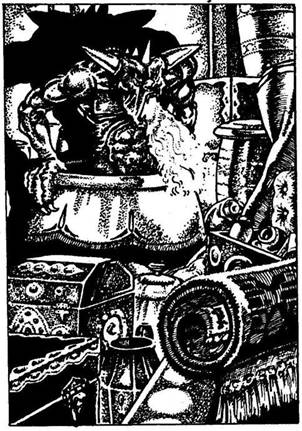
216.
Az ajtó egy raktárba nyílik, amely dugig van vázákkal, urnákkal, szőnyegekkel, dobozokkal, párnákkal és ládákkal. Amikor bemész, az ajtó becsapódik mögötted. Egy izmos, vörös bőrű, fején szarvakat viselő vadállat bújik ki az egyik urnából, és tüzet okád rád. Ez a Sátán, a raktár őre, és meg kell vele küzdened.
Sátán ÜGYESSÉG 6 ÉLETERŐ 8
Foggal és körömmel támad ráadásul, tüzes leheletéért is dobnod kell egy kockával minden egyes Fordulóban. Ha 1-et vagy 2-t dobsz, megéget, és ekkor még 1 pontot le kell vonnod ÉLETERŐDBŐL sebesülésed miatt. Ha 3-6-ot dobsz, elkerülöd a leheletét. Ha te győzöl - lapozz a 233-ra.
217.
Jó nagyot kortyolsz a finom vízből, élvezed, hogy végre nem érzed olyan száraznak a szádat, mint amilyen a sivatag. A délutáni nap könyörtelenül tűz, olyan erővel, hogy csak úgy perzsel a homok. Ellenállsz a kísértésnek, hogy megidd a maradék vizedet, és továbbmész - lapozz a 303-ra.
218.
Az egyik Patkányember zsebében 3 Aranytallért találsz, meg egy majom farkát. A szoba végében két boltíves átjárót látsz, ahonnan újabb folyosók nyílnak. Ha a bal oldali átjárón mész tovább - lapozz a 315-re. Ha a jobb oldali átjárón mész tovább - lapozz a 139-re.
219.
Leesha arckifejezése hirtelen megváltozik. Magabiztos önelégültségét rémület váltja fel. Mivel csak a közönséges fegyvereknek képes ellenállni, az Óriás Homokhernyó csipkézett szélű foga rá is veszélyes. Amikor fegyveredet megpillantja, a kanapéja mögött lévő ajtón át kimenekül a szentélyéből. Ha ki akarod nyitni a kanapé mellett álló ládát - lapozz a 265-re. Ha inkább kirohansz az ajtón és Leesha után eredsz - lapozz a 137-re.
220.
Amikor magadhoz térsz, igen gyenge vagy, de arra a gondolatra, hogy Malbordus már valahol előtted jár, azonnal talpra szökkensz. Elszántan vágsz neki az útnak déli irányba. Lapozz a 70-re.
221.
Amint kimondod a varázsigét (vonj le magadtól 2 ÉLETERŐ pontot!), azonnal fény árasztja el az alagutat. Továbbmászol, amikor valamivel lejjebb, az alagút oldalfalán egyszer csak íjpuskát veszel észre, és körülbelül két méterrel előtte egy kifeszített drótakadályt látsz. Átmászol a drótakadály alatt, szerencsédre nem érsz hozzá, és óvatosan elindulsz a falhoz erősített íjpuska felé. Az alagút végül egy piszkos szobába vezet, amelyet a falak mentén lévő fáklyák világítanak meg. Lapozz a 43-ra.
222.
A karmok mélyen a húsodba marnak, és kiserken a véred. A majom mancsa meg van átkozva, és az Élőholtak kivételével mindenkiből kiszipolyozza a lelket. Vesztesz 2 ÜGYESSÉG pontot! Kitéped a kezedből a majom mancsát, és visszadobod a fazékba. Mit teszel?
Fölemeled a fehér fazék
tetejét? Lapozz a 14-re.
Fölemeled a piros fazék
tetejét? Lapozz a 183-ra.
Átmész a kamrán a végében lévő boltíves
átjáróhoz? Lapozz a 20-ra.
223.
Yaztromo közli veled, hogy a Fény varázslat segítségével fénnyel áraszthatsz el minden olyan szobát, barlangot vagy területet, melyet akár természetes, akár mágikus sötétség borít. Megtanítja neked a varázsigét, amelyet ilyenkor kell elmondanod, de azt is hozzáteszi, hogy ez a varázslat nem veszi majd túlzottan igénybe az energiádat; csupán 2 ÉLETERŐ pontot vesztesz minden esetben, ha ezt alkalmazod. Lapozz vissza a 34-re, de előbb jegyezd fel ezt a varázslatot a KALANDLAPODRA, és jelöld ugyanott a 2 ÉLETERŐ pont veszteséget.
224.
Gyorsan elmondod a Fény varázslat varázsigéjét (vonj le magadtól 2 ÉLETERŐ pontot!), de a varázslat nem működik, s a sötétség csak nem szűnik. Nem tudod, hogy az aranyeső megsemmisítette összes varázserődet. Ha tovább akarsz botorkálni a sötétben - lapozz a 348-ra. Ha inkább visszamész a lépcsőkön és kinyitod az ajtót - lapozz a 307-re.
225.
A Fantomba döföd a kardodat, de az lepattan róla. Teljesen érzéketlen a közönséges fegyverekkel szemben, és csak nevet szánalmas igyekezeteden, hogy meg akarod ölni. Megragadja a karodat, és azonnal megbénulsz. Vesztesz 4 ÉLETERŐ pontot! Mire újra érezni kezded a végtagjaidat, a Fantom már messze jár. Merev lábakkal indulsz neki az alagútnak, és folytatod a keresést. Lapozz a 190-re.

226.
A fekete folt közepére lépsz, és fölemeled a bronzmedált. Bár tapintásra hideg, mégis riadtan veszed észre, hogy égeti a kezedet. Tedd próbára a SZERENCSÉDET! Ha SZERENCSÉD van - lapozz a 127-re. Ha nincs SZERENCSÉD - lapozz a 323-ra.
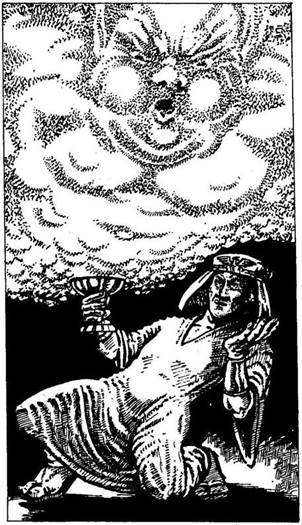
227.
A falnak támaszkodsz, és megmarkolod a kardodat. Egy férfi lép be a terembe, fehér köntösben, kezében aranyserleggel. Fején fehér fejdíszt visel, amelyet egy széttárt szárnyú főnixmadarat ábrázoló aranycsat rögzít. Amikor a Pap észreveszi a Rabszolgaőrt, térdre rogy, és fülét a halott férfi mellére tapasztja. Hirtelen felnéz, meglát, és hangosan így szól: - Barrabang Hinpo Garrabang. - Füstfelhő csap fel az aranyserlegből, kövér emberformát ölt. A Pap felszólítja a Szelet, hogy öljön meg. A Szél mindkét orcája kidagad, és hatalmasat fúj rád, akkorát, hogy a falhoz vág. Vesztesz 2 ÉLETERŐ pontot! Karddal nem tudsz nekimenni a Szélnek, valami mással kell rátámadnod, még mielőtt szétzúz. Ha ismered és használni is akarod a Tűz varázslatot - lapozz a 32-re. Ha a hátizsákodból vennél elő valamit, és azzal támadnád meg a Szelet - lapozz a 115-re.
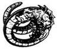
228.
Még föl sem tudod emelni a kardodat, máris meghalsz a Baziliszkusz egyetlen átható pillantásától!

229.
A Pap azonnal felismeri a faliszőnyeget, és tudja, milyen jelentést hordoz a rajta lévő Főnixmadár. Néhány szót kiált, és a Szél máris visszahúzódik a serlegbe. Azonnal rájössz, hogy lépéselőnyre tettél szert, és elmondod a Papnak, hogy a Rabszolga Őrt azért ölték meg, mert azt tervezte: megöli Leeshát. A Pap elismeri fölényedet, és bocsánatot kér, amiért alaptalanul támadott meg. Meghajol, és az aranyeső alatt kimegy a kamrából. Nem vesztegeted tovább itt az időt, hanem elhúzod a függönyt és kinyitod az ajtót. Lapozz 336-ra.

230.
Vadul úszol a hadihajó felé, és karodat lengetve akarod felhívni magadra a figyelmet. Kötelet dobnak le, és felhúznak a győztes hajó fedélzetére. Legnagyobb meglepetésedre a legénység egytől egyig csupa Törpe. A kapitány kérdéseket tesz fel neked és az elsüllyedt Belladonna kalózainak, akiket szintén a fedélzetre segítettek. Elmondod a kapitánynak, hogy fontos küldetésed van, amellyel Kőhidafalván, a Törpék városában bíztak meg. A kapitány gyanakodva mér végig, és azzal vádol, hogy te is csak egy elvetemült kalóz vagy. - Tehát azt mondod, hogy a feladattal Kőhidafalván bíztak
meg? - kérdi. - Ha így van, mondd meg, ki a királyuk? - Ha azt feleled, hogy a király neve Gallibrin - lapozz a 173-ra. Ha azt válaszolod, hogy a király neve Gillibran - lapozz a 278-ra.
231.
Fölemeled a harci kalapácsot, és lesújtasz vele a Sárkányra. A kalapács azonban lepattan a szoborról, amely teljesen sértetlen marad. Nem a megfelelő Sárkányszobrot választottad. Hirtelen gyengeség vesz erőt rajtad, mert egy láthatatlan gonosz erő veszi védelmébe a szobrot. Vesztesz 1 ÜGYESSÉG és 2 ÉLETERŐ pontot! Melyik Sárkányszobrot akarnád elpusztítani?
A Csontsárkányt? Lapozz a 362-re.
A Kristálysárkányt? Lapozz a 9-re.
Az Aranysárkányt? Lapozz a 247-re.
Az Ébenfa Sárkányt? Lapozz a 279-re.
232.
Miközben a varázsige szavait mormolod, jókedvűen nézed, ahogy a dühös Gyíkember hirtelen mély álomba merül a földön. Vonj le magadtól 1 ÉLETERŐ pontot a varázslásért, majd lapozz a 33-ra.
233.
A szobából nincs más kiút, csak az az egy, amerről bejöttél: Ha át akarod kutatni a raktárat - lapozz a 64-re. Ha inkább azonnal továbbállsz, és megpróbálod kinyitni a másik ajtót, abban a szobában, ahová utoljára mentél be - lapozz a 298-ra.
234.
Hozzáütöd az üveggömböt az egyik sziklához, s az széttörik, akár egy tojás. Aprócska Kobold pattan ki belőle, és hihetetlenül magas cérnahangon visít a boldogságtól. Nem győz hálálkodni neked, amiért kiszabadítottad a varázslat csapdájából. Egy kevés szikrázó port hinta fejedre, és közli veled, hogy az majd szerencsét hoz. Nyersz 1 SZERENCSE pontot! A Kobold még azt tanácsolja, hogy készíts magadnak fejkendőt zsákból és zsinegekből, mert meg kell védened a fejedet a naptól,
hiszen hosszú út áll előtted Vatosig. Amikor széttéped a zsákot, a Kobold int és eltűnik. Fejedet és nyakadat védve ismét elindulsz délnek. Lapozz a 39-re.
235.
Sötét éjszaka van már, s az egész napi kemény munka után fáradt és szomjas vagy. Az egyik asztalon vízzel teli edényt találsz. Egy hajtásra kiiszod a vizet. Túl fáradt vagy ahhoz, hogy továbbmenj, így aztán lepihensz a szoba sarkában lévő puha párnákra. Ha engedsz a kísértésnek és elalszol - lapozz a 267-re. Ha inkább fönn maradsz - lapozz a 131-re.
236.
Kétségbeesetten próbálod elkerülni a Tüskés Szem tekintetét, és vakon hadonászol kardoddal a levegőben. Tedd próbára a SZERENCSÉDET! Ha SZERENCSÉD van - lapozz a 182-re. Ha nincs SZERENCSÉD - lapozz a 299-re.

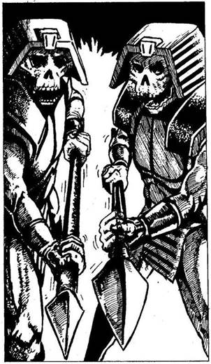
237.
A folyosó egy boltíves átjáró előtt ér véget, melyet fekete függöny takar. A boltív fölött kőből faragott koponya látható. Bár a koponya nem sok jóval kecsegtet, mégis elhúzod a függönyt, és belépsz az átjárón. Egy is kamrába jutsz, amely a szemközti falból ugyancsak egy boltíves kapun át nyíló nagyobb terem első része. Azonnal két embertestű, csontvázfejű teremtménybe botlasz, akik a boltív két oldalán állnak őrt. Mindkettőjük fején szfinxsisak van. Az egyik Csontváz Ember utadat elállva, csikorgó hangon így szól: - Ha nem tudsz megfelelő magyarázattal szolgálni arra vonatkozóan, hogy miért hatoltál be Leesha birodalmába, meghalsz! - Mindketten neked szegezik a dárdájukat. Mit teszel?
Teremtményaltató varázslatot alkalmazol
(ha ismered)? Lapozz a 371-re.
A mondod nekik, hogy elhoztad Leeshának az
Óriás Homokhernyó fogát
(ha nálad van)? Lapozz a 294-re.
Rájuk támadsz a kardoddal? Lapozz a 211-re.
238.
Körbejárod a hajót, amíg meg nem találod Gargót. Közli veled, hogy tegnap este az ivóban megölték az egyik tüzérét, és neked kell beállnod helyette. Az lesz a feladatod, hogy a csata idején ágyúgolyókat tölts az ágyúkba. Levisz a fedélzet alá, és megmutatja a függőágyadat. A Belladonna csakhamar kifut a nyílt tengerre, és boldog vagy, hogy végre délnek hajózol. Kora délután az egyik kalóz
elkiáltja magát az árbockosárból: - Hajó jobbra! - Hirtelen nagy sürgés-forgás támad a legénység soraiban. A kapitány parancsokat osztogat, és mindenki elfoglalja a harcállását. Miközben azon töprengsz, vajon ki is lehet az ellenséges hajón, te is elfoglalod a helyedet az ágyúdnál. Ekkor rossz hírt közölnek veletek - nem kereskedő-, hanem hadihajó közeledik. Egyszerre csak mindenfelől hatalmas dörrenéseket hallasz: a hadihajó ágyúi lövik a Belladonnát. A kapitány tűzparancsot ad, de már látod, hogy a Belladonna nem veheti fel a harcot a hadihajóval. A heves csatában hajótok süllyedni kezd, és már az életedet próbálod menteni. Dobj két kockával! Ha a kapott összeg ugyanannyi vagy nagyobb, mint ÜGYESSÉG pontjaid száma - lapozz a 187-re. Ha a kapott összeg kevesebb, mint ÜGYESSÉG pontjaid száma - lapozz a 308-ra.
239.
A mennyezet rohamosan süllyed, és mire a varázsigét elmondod, már négykézláb állsz (vonj le magadtól 2 ÉLETERŐ pontot!). Hirtelen lángra lobban az ajtó, és gyorsan átbújsz a tűz okozta lyukon. Tedd próbára a SZERENCSÉDET! Ha SZERENCSÉD van - lapozz a 90-re. Ha nincs SZERENCSÉD - lapozz a 356-ra.
240.
Amikor a Gnóm látja, hogy a kardod elsüllyedt, botjával gyors egymásutánban háromszor koppant a padlón. A bot a szemed előtt változik át sziszegő kígyóvá, amely feléd kúszik.
Kígyó ÜGYESSÉG 6 ÉLETERŐ 6
Ha akár egyetlen Fordulóban is vesztesz - lapozz a 373-ra. Ha egyetlenegy Fordulóban sem vesztesz - lapozz a 270-re.
241.
Gyorsan ráhúzod a maszkot az arcodra, hogy elhárítsd magadtól a Szelet. A maszk azonban sajnos nem véd meg, és a Szél a falhoz vág. Vesztesz 2 ÉLETERŐ pontot! Mit próbálsz ki?
Egy Tükröt? Lapozz a 27-re.
Egy Főnixes faliszőnyeget? Lapozz a 229-re.
Egyiket sem? Lapozz a 312-re.
242.
A Sas megragadja éles karmaival a Pterodactylust, és görbe csőrét belemélyeszti a nyakába. A Pterodactylus halálsikolya egyre halkul, míg végül a hatalmas ragadozó tagjai úgy csapódnak a földhöz, akár egy kő. Jókedvűen gratulálsz a bátor sasnak, miközben az ismét dél felé száll veled. Átrepültök a Fehérvíz folyó fölött, alattatok egyre sivárabb a vidék. Mikor végre eléritek a sivatag peremét, a sas leereszkedik a földre. Már sötétedik, és a sas nem akar berepülni a sivatagba. Leszállsz a hátáról, és rejtekhely után nézel. Egy
üreg mellett döntesz, amelyet a porhanyós homokban találsz. Pirkadatkor ébredsz, és szomorúan veszed észre, hogy a sas hazaröpült. Végignézel a tájon, de nem látsz mást, csak puszta homokot. Miközben arra gondolsz, vajon milyen sors vár rád, nekivágsz a hosszú útnak dél felé. Amikor a nap felbukkan az égen, kellemetlen meleged lesz. Délre kiszárad a szád, és iszonyú szomjúság gyötör. Ha tudsz vizet varázsolni - lapozz a 297-re. Ha ezt a varázslatot nem tanultad meg - lapozz a 81-re.
243.
Az ajtó egy keskeny folyosóra nyílik. A hőség egyre nő, ahogy előremész. Iszonyúan izzadsz, és látod, hogy nem mehetsz tovább. Visszafordulsz, de ekkor lángnyelvek csapnak ki a falból és a padlóból a sziklák repedései közül. Tűzcsapdába kerültél. A Nap képe alatt ez olvasható ki az ajtón lévő hieroglifákból: VÉGZET. A figyelmeztetés valóra vált. Kalandod itt véget ér!
244.
Belenyúlsz a zsákodba, hátha találsz benne valamit, amit felhasználhatsz a Fantom ellen. Mit vágsz hozzá a Fantomhoz?
Egy Gyöngyöt? Lapozz a 185-re.
Egy Ezüstgombot? Lapozz a 350-re.
Egy Elefántcsont Amulettet? Lapozz a 317-re.
Egyiket sem? Lapozz a 260-ra.
245.
Kardodat könnyedén belevágod a Kagylószörnybe, de az fel sem veszi a döfést. Tovább támad, és te egyre hátrálsz a folyamatos lándzsadöfések elől. Vesztesz 4 ÉLETERŐ pontot! Rájössz, hogy nem tudod megsebesíteni. Ha el akarsz futni - lapozz a 359-re. Ha be akarsz rohanni a tengerbe - lapozz az 51-re.
246.
Ha ismered a Csapdafelderítő varázslatot - lapozz a 388-ra. Ha ezt a varázslatot nem ismered - lapozz a 109-re.
247.
Fölemeled a harci kalapácsot, és lesújtasz vele a Sárkányszoborra. A kalapács azonban lepattan a szoborról, amely sértetlen marad. Nem a megfelelő Sárkányszobrot választottad. Hirtelen gyengeség vesz erőt rajtad, amikor valami láthatatlan gonosz erő megpróbálja megvédeni a szobrot. Vesztesz 1 ÜGYESSÉG és 2 ÉLETERŐ pontot! Melyik Sárkányszobrot próbálód meg szétzúzni?
A Csontsárkányt? Lapozz a 362-re.
Az Ezüstsárkányt? Lapozz a 231-re.
A Kristálysárkányt? Lapozz a 9-re.
Az Ébenfa Sárkányt? Lapozz a 279-re.

248.
Amikor kiejted a szádon az Ajtónyitó varázslat varázsigéjét, az ajtó lassan kinyílik. Vonj le magadtól 2 ÉLETERŐ pontot a varázslásért! Az ajtón belépve kihalt téren találod magad. Lapozz a 111-re.
249.
Amint továbbmész a folyosón, hirtelen mozgást veszel észre a félhomályban. Bőrvértet viselő izmos lény tart feléd. A fáklya fénye két hosszú pengéjű késről verődik vissza, amelyeket a kezében tart. Amikor a fény a fejére vetődik, látod, hogy a bőre zöld és himlőhelyes, a szeme piros, orrlyukai tágak, hatalmas szája tűhegyes fogakkal van tele. Mély torokhangon így szól: - Malbordus lesz a győztes, te pedig meghalsz! - Ezt a Mutáns Ork Gyilkost küldték ellened, hogy megöljön:
Mutáns Ork ÜGYESSÉG 11 ÉLETERŐ 11
Ha a kardodon kívül nincs nálad egy tőr is, hátrányban leszel ezzel a gyakorlott gyilkossal szemben, akinek két hosszú pengéjű kése van. Minden egyes Fordulóban 2 ponttal csökkentsd Támadóerődet. Ha legyőzöd - lapozz az 5-re.

250.
Egy ajtó mellett visz el az utad. Körös-körül lángok közt vergődő rút teremtmények díszesen faragott kőfiguráit látod. Ha ki akarod nyitni az ajtót - lapozz a 128-ra. Ha inkább továbbmész - lapozz a 344-re.
251.
A tömeg gúnykacaja közepette elindulsz a lépcső felé. A tagbaszakadt férfi példáját követve lökdösni, taszigálni kezdenek, és nem tágítanak mellőled, míg el nem éred a szobád ajtaját. Gyorsan bemész, és magadra zárod az ajtót, de ekkor döbbenten veszed észre, hogy a dulakodás során kirabolták az összes zsebedet. Megfosztották maradék Aranytallérjaidtól. Vesztes 2 SZERENCSE pontot! Lefekszel aludni, s közben átkozod balszerencsédet. Hajnalban ébredsz egy nyugtalan éjszaka után. A helyzetedet tovább súlyosbítja, hogy a testedet tetőtől talpig viszkető poloskacsípések borítják. Őrült vakaródzásba kezdesz. Nem vesztegeted tovább az idődet ebben a barátságtalan fogadóban, hanem gyorsan lemész a mólóhoz, ahol megleled a Belladonnát. Az árbocon lógó zászlón azonban egy koponyát meg két lábszárcsontot látsz - tehát kalózhajóval van dolgod! Felmész a hajóhídon, és máris a fedélzeten, vagy. Lapozz a 238-ra.
252.
Szerencsédre nem a kardforgató kezedet égetted meg. Vesztesz 1 ÉLETERŐ pontot! Gyorsan visszahúzod a kezedet, és eldöntöd, mit csinálj ezután. Mit teszel?
Elveszed az arany csontváz-
szobrocskát? Lapozz a 386-ra.
Kinyitod az arany ékszeres
ládikót? Lapozz a 82-re.
Elhagyod a szobát a szemközti
ajtón át? Lapozz a 3-ra.
253.
A Fantom megbénít átható tekintetével, mielőtt elmenekülhetnél az alagúton. Vesztesz 4 ÉLETERŐ pontot! Mire visszatér az erőd, a Fantom már messze jár. Merev lábakkal indulsz tovább az alagútban, és folytatod a keresést. Lapozz a 190-re.
254.
A nyílvessző célt téveszt, és a Pterodactylus támadni készül. Lapozz a 363-ra.

255.
Kimondod a varázsige szavait (vonj le magadtól 2 ÉLETERŐ pontot!), de nem történik semmi. Nem tudtad, hogy az aranyeső megfoszt minden Varázserődtől. El kell döntened, melyik ajtót nyisd ki. Ha azt az ajtót akarod kinyitni, amelyen a Nap képe látható - lapozz a 243-ra. Ha azt, amelyiken a Hold képe látható - lapozz a 273-ra.

256.
A pergamenen számodra ismeretlen furcsa jelek vannak. Ha ismered az Írásjelolvasó varázslatot - lapozz a 208-ra. Ha nem - lapozz a 147-re.
257.
Váratlanul feltámad a szél, és az ég beborul. Tomboló vihar tör ki, felkavarja a homokot, szinte semmit nem látni. Homokvihar kellős közepébe kerültél! Vesztesz 2 ÉLETERŐ pontot. Tedd próbára a SZERENCSÉDET! Ha SZERENCSÉD van - lapozz a 129-re. Ha nincs SZERENCSÉD - lapozz a 385-re.
258.
Amikor a hozzád legközelebb álló Fekete Apostol észreveszi a nyakadban a medált, így szól: - Lépj ki. Legyen megtiszteltetés számodra, hogy te lehetsz az áldozat. Életednek, amelyet feláldozol,
Leesha minden bizonnyal örülni fog. - Mindhárman a magasba emelik karjukat, és énekelni kezdenek, te pedig, mintha csak valami kényszerítene, elindulsz felfelé, az oltárhoz, és végigfekszel a márványlapon. Ha tudsz és akarsz is, alkalmazhatsz Teremtményaltató varázslatot - lapozz a 195-re. Ha nem - lapozz a 392-re.
259.
Kissé hátralépsz, és nekifutásból átugrod a gödröt. Dobi két kockával! Ha a kapott összeg ugyanannyi vagy kevesebb, mint ÜGYESSÉG pontjaid száma - lapozz 144-re. Ha a kapott összeg nagyobb, mint ÜGYESSÉG pontjaid száma - lapozz a 122-re.
260.
Mivel semmit nem találsz, amivel megsemmisíthetnéd a Fantomot, végül is megbízható kardod mellett döntesz. Lapozz a 225-re.
261.
Keresztülgázolsz a poron, s ekkor hirtelen rettenetes rémképek szállják meg az agyadat. Félelmedben felordítasz, mert azt képzeled, hogy a szoba lángokban áll. Testedet lángnyelvek nyaldossák, a halál szinte elkerülhetetlen. Rémlátomásod hosszú percekig tart, mígnem eszméletlenül terülsz el a földön. Amikor végül magadhoz térsz, még mindig halálra vagy rémülve és reszket a kezed. Bátorságod csorbát szenvedett. Vesztesz 3 ÉLETERŐ pontot! Nem óhajtasz több időt tölteni ebben a szobában, kimész a vasajtón. Tántorogva elindulsz a folyosón, a villódzó fények felé. Lapozz a 339-re.
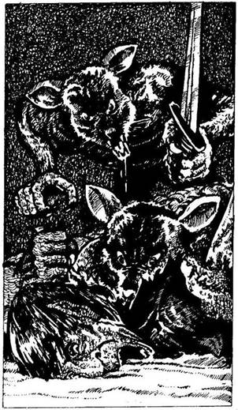
262.
A folyosó végében lévő sivár szobában két Patkányember nagy hévvel épp egy Goblin tetemét lakmározza. Amint megpillantanak, talpra szökkennek, és kardjukkal rád támadnak.
ÜGYESSÉG ÉLETERŐ
Első Patkányember 5 4
Második Patkányember 5 5
Ha legyőzöd őket - lapozz a 218-ra.
263.
A folyosó egyenesen visz tovább, és addig mész rajta, míg egy pompás, szfinx alakú, faragott székhez nem érsz, amely a fal mellett balra áll. Ha le akarsz pihenni a székre - lapozz az 55-re. Ha inkább továbbmész - lapozz a 202-re.

264.
Yaztromo közli veled, hogy a Tűz varázslat segítségével elérheted, hogy védőfal emelkedjék köré, vagy képes légy ujjbegyeddel lángra lobbantani egy fáklyát, illetve meggyújtani egy lámpást. Megtanítja neked a varázsigét, melyet ilyenkor kell
elmondanod, és azt is hozzáteszi, hogy energiaveszteséged a tűz méreteivel egyenesen arányos lesz majd: minden alkalommal 1-2 ÉLETERŐ pontot vesztesz. Lapozz vissza a 34-re, de előbb jegyezd fel ezt a varázslatot a KALANDLAPODRA, és ugyanott jelöld elvesztett ÉLETERŐ pontjaid számát is.
265.
Fölemeled a láda tetejét, és amilyen gyorsan csak tudod, becsukod a szemedet. De már láttad a nagy H betűt, melyet a láda fenekén lévő aranyporba írtak. Vesztesz 4 ÉLETERŐ pontot! Ha már az összes betűt - H, A, L, Á, L - láttad - lapozz a 148-ra. Ha még nem láttad az összes betűt - lapozz a 304-re.
266.
A csápokban fut a Homoki Csattogó két fő idegszála, melyek most működésképtelenné váltak. A teremtmény undorító pofája nyitva marad, és így ki tudod húzni súlyosan sérült lábadat. Vesztesz 4 ÉLETERŐ és 1 ÜGYESSÉG pontot! Miután bekötözöd a lábadat a ruhádból leszakított ronggyal, továbbindulsz délnek. Lapozz a 106-ra.
267.
Álmodból hatalmas morajlás hangjai riasztanak fel, melyek a folyosón az aranyeső túloldaláról jönnek. Az álom felfrissített, és azonnal talpra szökkensz a riasztó hangokra. Nyersz 2 ÉLETERŐ pontot! A függöny mögött egy ajtót látsz, de már nincs időd rá, hogy kinyisd. Ha el akarsz bújni a függöny mögött - lapozz a 44-re. i inkább megvárod, akárki legyen is az, aki bejön a kamrába - lapozz a 227-re.
368.
Annak ellenére, hogy a nyitott ajtón át fény szűrődik‚ olyan sötét van, hogy semmit sem látsz, amikor a küszöböt átléped. Ha tudsz és akarsz is Fény varázslatot alkalmazni - lapozz a 383-ra. Ha lassan lépkedve be akarsz menni a teljes sötétségbe - lapozz a 326-ra.
269.
Amint a folyadékkal lemosod sebeidet, azok a szemed láttára begyógyulnak. Bár a főzet mágikus hatása erős, regeneráló ereje elég gyenge, így aztán ÉLETERŐ pontjaid csupán 4-gyel növekednek, de azért örülsz, hogy meggyógyultál, és magabiztosan mész vissza a folyosón. Lapozz a 364-re.
270.
A Gnóm felül rémületében, amikor látja, hogy kígyó védelmezőjét megölték. Őrjöngve kérlel, hogy ne bántsd. Ha beszélni akarsz vele - lapozz a 83-ra. Ha megölöd - lapozz a 61-re.
271.
A lépcsősor tetején egy vastag tölgyfa ajtó van. Lenyomod a kilincset, és meglepetten tapasztalod, hogy az ajtó nincs kulcsra zárva. Még inkább meglepődsz, amikor a városfal mögött lévő ajtót kinyitva a Koponyák Sivatagába jutsz. A napfény bántja a szemedet a labirintus katakombáinak sötétsége után. Lenézel a lábad elé a homokba, és az ajtótól kiindulva a városfal mentén lábnyomokat veszel észre. Ha követni akarod a lábnyomokat - lapozz a 394-re. Ha inkább újra lemész a lépcsőn és ellenkező irányba indulsz el a folyosón - lapozz a 358-ra.

272.
A harmadik napon végre megpillantod a földet, és az ár a part felé sodor. Szerencsédre egy homokos partszakaszon kötsz ki, és úgy érzed, mintha jókora utat tettél volna meg délnek. Meleg van, kiszáradt a szád. Ahová nézel, végestelen végig csak homokot látsz, egészen a látóhatárig. Tedd próbára a SZERENCSÉDET! Ha SZERENCSÉD van - lapozz a 78-ra. Ha nincs SZERENCSÉD - lapozz a 352-re.

273.
Az ajtó egy keskeny, lejtős folyosóra nyílik, mely egy másik kamrába vezet. A falakat hieroglifák borítják, és egy kőasztalon három agyagfazék áll. Mit teszel?
Fölemeled a fehér fazék fedelét? Lapozz a 14-re.
Fölemeled a fekete fazék
fedelét? Lapozz a 156-ra.
Fölemeled a piros fazék fedelét? Lapozz a 183-ra.
Átmész a kamra túlsó végében lévő boltíves
átjáróhoz? Lapozz a 20-ra.

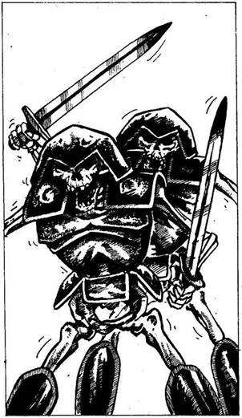
274.
Két alak közeledik feléd, s végigfut a hideg a hátadon. Sárga csontjaikon csak úgy lötyög a páncélruha. Két Csontváz Harcos csörtet feléd karddal a kezében.
ÜGYESSÉG ÉLETERŐ
Első Csontváz Harcos 7 5
Második Csontváz Harcos 6 6
Mindkét Csontváz egyszerre támad rád. Minden egyes Fordulóban külön-külön kell megküzdened velük, de el kell döntened, hogy kettőjük közül melyikkel vívsz meg előbb. Támadd meg a kiválasztott Csontvázat a szokásos módon. A másik ellen, ugyancsak a szokásos módon, dobnod kell, hogy megállapítsd Támadóerődet, de még akkor sem sebzed meg ellenfeledet, ha a te Támadóerőd a nagyobb; úgy tekinted, mintha csupán kivédted volna az ő támadását. Természetesen, ha ellenfeled Támadóereje a nagyobb, akkor ő sebzett meg téged. Ha te győzöl - lapozz a 310-re.
275.
Kissé kábult vagy, mert a sivatagi hőségben enyhe napszúrást kaptál. Vesztesz 1 ÜGYESSÉG pontot! Ennek ellenére folytatod az utadat délnek. Lapozz a 164-re.
276.
Beledugod a kulcsot a zárba, és jobbra fordítod. Kattan a zár, és benyitsz az ajtón. Lapozz a 88-ra.
277.
Nem történik semmi, amikor a gyűrűt az ujjadra húzod. Úgy döntesz, hogy rajta hagyod. Mit teszel?
Fölemeled a fekete fazék
fedelét? Lapozz a 156-ra.
Fölemeled a piros fazék fedelét? Lapozz a 183-ra.
Átmész a kamra túlsó végében lévő holtíves
átjáróhoz? Lapozz a 20-ra.
278.
A kapitány nevetve mondja: - Jól van, idegen, igazat beszélsz, de attól tartok, meg kell magyaráznod még egy-két dolgot! Este a vacsoránál elmondod a kapitánynak és a legénységnek, milyen feladattal bíztak meg, és arról is beszélsz, milyen fontos a küldetésed. A kapitányt szemmel láthatólag mélyen aggasztja a katasztrófa, amely Allansia jólelkű lakóit fenyegeti, és felajánlja, hogy hajóján elvisz a Koponyák Sivatagába. A hadihajó két nap múlva lehorgonyoz, és kitesznek a fehér homokos parton. A hajószakács jóvoltából Élelmiszer-tartalékod ismét tíz étkezésre elegendő. Búcsút intesz a legénységnek, és gyalog folytatod az utadat. Ameddig a szemed ellát, csak homok vesz körül. Ha keletnek akarsz menni a sivatagon át - lapozz a 327-re. Ha inkább délnek mész a part mentén - lapozz a 151-re.
279.
Fölemeled a harci kalapácsot, és lesújtasz vele a Sárkányra. A kalapács azonban lepattan a szoborról, amely sértetlen marad. Nem a megfelelő Sárkányszobrot választottad! Hirtelen gyengeség vesz erőt rajtad, amikor valami gonosz erő megpróbálja megvédeni a szobrot. Vesztesz 1 ÜGYESSÉG és 2 ÉLETERŐ pontot! Melyik Sárkányt akarod szétzúzni?
A Csontsárkányt? Lapozz a 362-re.
Az Ezüstsárkányt? Lapozz a 231-re.
A Kristálysárkányt? Lapozz a 9-re.
Az Aranysárkányt? Lapozz a 247-re.
280.
A Fantom átható tekintete ellenére sem veszted el az eszedet. Szélesre tárt karral közeledik feléd, és igyekszik magához ragadni, hogy ezzel is növelje erejét. Ha karddal akarsz rátámadni a Fantomra - lapozz a 225-re. Ha inkább gyorsan átkutatod a hátizsákodat, hátha találsz valami használható fegyvert a Fantom ellen - lapozz a 244-re.
281.
Összeteszed két kezedet, és vizet varázsolsz. Markod azonnal megtelik vízzel, amit mohón kortyolni kezdesz. Csak akkor szűnik meg a víz további áramlása, amikor leereszted a kezedet. Felfrissülve folytatod az utadat a déli nap irányába. Lapozz a 116-ra.
282.
Leesha felé döfsz, de kardod láthatatlan akadályba ütközik. Kegyetlen kacagását visszhangozzák a szentély falai, és úgy érzed, mintha a földhöz szögeztek volna. Mozdulni sem bírsz, amikor a kanapé mögött kinyílik egy ajtó, és egy férfi lép be a szentélybe. Arca maga a gonoszság, és ekkor ráébredsz a förtelmes valóságra - ez Malbordus. Csontos ujjaival átkutatja a holmidat, és elveszi az összes Sárkányszobrocskádat. Ezután meghajol Leesha felé, majd ugyanazon az ajtón át, amelyen jött, távozik, és sorsodra hagy. Már nem tehetsz semmit Allansia népéért, már nem tudod megmenteni őket. Malbordus a Sárkányaival visszaröpül a Fekete Erdőbe, és káosz lesz úrrá Allansia földjén. Küldetésed nem járt sikerrel, megbuktál. Kalandod itt véget ér!
283.
A fadobozban egy tükröt meg egy lezárt agyagkorsót találsz. A tükröt beteszed a hátizsákodba, és azon gondolkodsz, vajon mit is csinálj az agyagkorsóval. Ha széttöröd - lapozz az 50-re. Ha ott hagyod a dobozban és inkább továbbmész - lapozz a 70-re.
284.
A Fekete Apostolok elhiszik a történetedet, de azt mondják, nem engedhetik meg neked, hogy te add
át az ajándékot Leeshának; majd ők átadják neki a nevedben. Felszerelési Tárgyaid listájáról húzz ki valamit. Miközben azon kezdenek vitatkozni, vajon melyikük is adja át Leeshának az ajándékot, gyorsan elsurransz mellettük, és szaporán az oltár mögötti átjáró felé indulsz. Lapozz a 341-re.
285.
Bár a vidék teljesen elhagyatott, meglepetten veszel észre a földön egy fekete foltot. Rothadás szaga terjeng a levegőben, mintha a folt felől áradna. Befogod az orrodat, és odamész, hogy közelebbről megvizsgáld. Ekkor látod, hogy a folt közepén egy bronzmedál fekszik, amelybe egy „M” betűt véstek. Lehet, hogy véletlenül Malbordus ejtette el? Ha fel akarod emelni a medált - lapozz a 226-ra. Ha inkább ott hagyod, ahol van, és továbbmész délnek - lapozz a 159-re.
286.
A szék enyhén remegni kezd alattad, és éppen le akarsz ugrani róla, amikor bizsergő érzés fut végig a testeden, mely nyugtatóan hat rád. Körülbelül öt percig tart ez a remegés, majd nem szívesen bár, de felállsz a székről. 4 ÉLETERŐ pontot nyersz a szék erősítő hatása miatt. Új erőre kapva indulsz útnak ismét. Lapozz a 202-re.
287.
Kinyitod az ékszeres ládikót, és egy fénylő vassisakot találsz benne. Ha a fejedre akarod tenni a sisakot - lapozz a 97-re. Ha inkább nem nyúlsz hozzá és továbbmész délnek a folyosón - lapozz a 140-re.
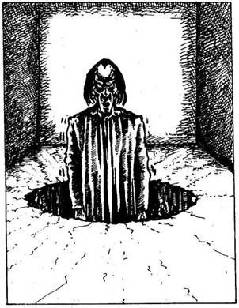
288.
Hirtelen egy férfi feje bukkan elő a gödörből: arca, akár az ördögé. A föld fokozatosan emelkedni kezd alatta, míg végül a lába egy vonalba kerül a szoba szintjével. Lassan közeledik feléd, és így szól: - Add ide a Sárkányokat, amelyeket keresek! - Gyorsan hátrálni kezdesz, ugyanis nem tudod, milyen szörnyű hatalma lehet Malbordusnak. Hirtelen tapsol egyet, és ekkor fülsiketítő mennydörgés töri meg a szoba csendjét. Egy villám csapódik be, megrepednek a szoba falai meg a padlója, és kibírhatatlanul fájni kezd a füled. Ha van az ujjadon egy rézgyűrű - lapozz a 334-re. Ha nincs - lapozz a 351-re.
289.
Bár a nap melege kibírhatatlan, fejkendőd megvéd a napszúrástól, és elszántan mész tovább délnek. Lapozz a 164-re.

290.
Megmarkolod az ezüstbotot, és mérhetetlen megkönnyebbülésedre a mennyezet nem süllyed tovább. Azon töprengsz, vajon hogyan nyisd ki az ajtót, amelyik szemben van azzal, amelyen bejöttél. Ha van nálad egy kristálykulcs, vagy ismered az Ajtónyitó varázslatot - lapozz a 178-ra. Ha nincs kristálykulcsod, és ezt a varázslatot sem ismered - lapozz a 366-ra.
291.
Amint átmész a szobor árnyékán, a szobor megmozdul. Kőizmai csikorognak, nyikorognak, miközben leszáll a talapzatról. A Kő Gólem döngő léptekkel indul el feléd magasra tartott harci kalapácsával a kezében.
Kő Gólem ÜGYESSÉG 8 ÉLETERŐ 12
Ha sikerül legyőznöd a Gólemet - lapozz a 172-re.
292.
Még idejében ki tudod húzni a kezedet a fazékból, mielőtt a karmok a húsodba vájnának. Visszacsapod a fedőt a fazék tetejére, és eldöntöd, mit tegyél.
Fölemeled a fehér fazék fedelét? Lapozz a 14-re.
Fölemeled a fekete fazék
fedelét? Lapozz a 156-ra.
Átmész a kamra túlsó végében lévő boltíves
átjáróhoz? Lapozz a 20-ra.
293.
A csata színhelye lassan eltűnik a szemed elől, ahogy az árbocdarabba kapaszkodva tovaúszol. Két napja hányódsz már a tengeren, és egyre gyengülsz. Dobj két kockával, és a kapott összeget vond le ÉLETERŐ pontjaid számából. Ha még mindig életben vagy - lapozz a 272-re.

294.
A hozzád legközelebb álló Csontváz Ember kinyújtja a kezét, és kéri, hogy add oda neki a fogat. Ha odaadod - lapozz a 346-ra. Ha úgy döntesz, hogy nem bízol meg a Csontváz Emberekben, és inkább megküzdesz velük - lapozz a 211-re.
295.
Amikor megpróbálod lefeszíteni a rácsot a falról, észreveszed, hogy már piszkálta valaki előtted. Egy függőleges és egy vízszintes rudat megjelöltek krétával a rács közepén, s így egy nagy „L” betű olvasható le. A Halál Küldöncének újabb támadása ez. Vesztesz 4 ÉLETERŐ S 1 SZERENCSE pontot! Sikerül benyúlnod a rács mögé, de ott nem találsz semmit, mert az csak egy szellőzőnyílás. Balszerencsédet átkozva továbbmész. Lapozz a 157-re.

296.
Ha azt akarod válaszolni neki, hogy tetszik a művészi munkája - lapozz a 181-re. Ha azt akarod neki válaszolni, hogy egyáltalán nem tetszik - lapozz a 105-re.
297.
Két tenyeredet összeillesztve elrebeged a Vízteremtő varázsigét. Markod hirtelen megtelik vízzel, amit hatalmas kortyokban kihörpölsz. A délutáni nap könyörtelenül tűz, olyan erővel, hogy a kiszáradt homok felől perzselő fuvallatok csapnak az arcodba. Amikor már eleget ittál, leengeded a kezedet, és megszűnik a víz további áramlása. Nekivágsz a sivatagnak. Lapozz a 24- re.
298.
Egy üres helyiségbe nyitsz be. Absztrakt mintás mozaikpadló van a szobában, kivéve a szemközti ajtó előtti részt, ahol egy Medúza-fej látható. Az ajtóra parányi ládikót erősítettek, amelynek a tetején rés van. Odamész az ajtóhoz, lenyomod a kilincset, és az ajtó enged. Ha egy Aranytallért tennél a ládikóba, mielőtt kimész a szobából - lapozz a 214-re. Ha inkább nem adakozol, hanem továbbmész - lapozz a 268-ra.
299.
A Tüskés Szem elúszik szúrásra kész kardod fölött, s közben halálos tüskéivel végigsúrolja az arcodat. Izmaid hirtelen kővé dermednek, mert a
tüskékből méreg szivárgott át a testedbe. Később, a nap folyamán a Kígyó Őrök elvisznek, és kitesznek dísznek a város falára a vízköpő sárkányok közé. Kalandod itt véget ér!
300.
- Remek! - folytatja a beszélő fej. - Helyesen válaszoltál! - Piros füstfelhő csap ki a szájából, és kavarogni kezd az arcod előtt. Mikor a füst végül eloszlik, a bronzfej újra mozdulatlanná válik és elnémul. Ismét erős vagy, s úgy érzed, mintha a sors veled lenne. Nyersz 2 ÜGYESSÉG és 2 SZERENCSE pontot! Újult erővel, lelkesen lépsz ki a szobából a folyosóra. Lapozz a 17-re.

301.
Yaztromo közli veled, hogy az Ugrás varázslat segítségével képes leszel átugrani magas falak, illetve gödrök fölött. Megtanítja neked a varázsigét, melyet ilyenkor kell elmondanod, és azt is hozzáteszi, hogy ha ezt a varázslatot használod, minden alkalommal 3 ÉLETERŐ pontot vesztesz. Miután feljegyezted ezt a varázslatot a KALANDLAPODRA és bejelölted a 3 ÉLETERŐ pont veszteséget - lapozz a 34-re.
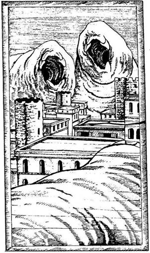
302.
A fa dombormű igen bonyolult, minden bizonnyal hónapokig tartott, míg elkészült. Megnézed a házakat, és ekkor hirtelen egy hajszálrepedést veszel észre közvetlenül az egyik tető alatt. Rájössz, hogy a tető fölemelhető, és alatta az épület belseje üreges. A szerencse veled van, mert az épület belsejében egy kis faragott Ébenfa Sárkányszobrot találsz. Mosolyogva vágod zsebre kincsedet, majd kinyitod a szemközti ajtót. Lapozz a 93-ra.

303.
Fél órával később alacsony, barna sátrat pillantasz meg, amilyenben a sivatagi nomádok laknak. A sátor egyik cövekéhez egy lovat kötöttek. Ha meg akarsz ismerkedni a nomádokkal - lapozz a 196-ra. Ha inkább továbbmész délnek - lapozz a 389-re.
304.
Megátkozod a Halál Küldöncét, de úgy érzed, megmenekültél gonosz tréfájától. Hirtelen elhatározással berohansz az ajtón, és Leesha után veted magad. Lapozz a 137-re.

305.
Felnézel az égre, és észreveszed, hogy valami száll feléd. Amint közelebb kerül hozzád, látod, hogy az egy hatalmas ragadozómadár, felsőteste azonban olyan, mint egy nőé. Velőtrázó sikolyt hallat, amit nyomban felismersz. Kétségbeesetten dugod be a füledet a ruhádból leszakított ronggyal, hogy ne halld a félelmetes Hárpia hipnotizáló hangját. Ha tudsz és akarsz is Varázsnyíl varázslatot alkalmazni - lapozz a 184-re. Ha nem, karddal kell megküzdened a Hárpiával. Lapozz a 75-re.

306.
A hátára fordítod a haldokló férfit, és látod, hogy már nincs sok ideje hátra. Bátor harcos, aki az utolsó leheletéig akart küzdeni. Megkérdezed, mit keres itt, mert szerinted nem idevalósi. Suttogva, hogy szinte alig hallod, így szól: - Az arany csontváz... valahol itt van... óvakodj a kő árnyékától... - Ezt követően elhallgat, és többé nem mozdul. A kezébe adod a kardját, hiszen minden bizonnyal így kívánta volna ő is, aztán továbbmész a folyosón. Az hamarosan ismét jobbra fordul, és nemsokára elérkezel egy vasajtóhoz, mely jobbról nyílik a falban. A távolban izzó fényeket veszel észre, amelyek a folyosó félhomályában villódznak. Ha ki akarod nyitni a vasajtót - lapozz a 153-ra. Ha meg akarod vizsgálni a villódzó fényeket - lapozz a 339-re.
307.
Kinyílik az ajtó, és egy kincsekkel teli szobába lépsz be. Serlegek, szobrocskák, drágakövekkel, ékszerekkel megrakott ládikók, száz meg száz mesébe illő kincs van a szobában. Mit teszel?
Magadhoz veszel néhány
drágakövet? Lapozz a 143-ra
Elveszed az arany csontváz-
szobrocskát? Lapozz a 386-ra.
Kinyitod az arany ékszeres
ládikót? Lapozz a 82-re.
Elhagyod a szobát a szemközti
ajtón át? Lapozz a 3-ra.
308.
Amikor a hajó süllyedni kezd, a legénység az ágyúk mellől a fönti fedélzetre vezető lépcső felé rohan. Te éred el elsőként a lépcsőt, és feljutsz a fedélzetre, mielőtt a hajó elsüllyedne. Ha letörsz egy darabot az árbocból és abba kapaszkodva menekülsz el a hadihajó elől - lapozz a 293-ra. Ha a hadihajó felé akarsz úszni - lapozz a 230-ra.
309.
Amikor leereszted a válladról a hátizsákot, egy újabb villám csap ki a botból. Tedd próbára a SZERENCSÉDET! Ha SZERENCSÉD van - lapozz a 145-re. Ha nincs SZERENCSÉD - lapozz a 121-re.

310.
Elveszed az egyik Csontváz pajzsát, és a karodra húzod. Nyersz 1 ÜGYESSÉG pontot! A folyosó egy faajtónál ér véget, mely zárva van. Ha ismered az Ajtónyitó varázslatot és alkalmazni is akarod - lapozz a 114-re. Ha van egy vaskulcsod - lapozz a 276-ra. Ha nincs mivel kinyitnod az ajtót - lapozz a 399-re.
311.
Kardot rántasz, és megpróbálsz Segíteni az elkeseredetten küzdő sasnak. A Pterodactylus azonban messze van tőled, és így nem tudod elhárítani véres csípéseit és karmolásait. Döntsd el a csatát a sas és a Pterodactylus között.
ÜGYESSÉG ÉLETERŐ
Óriás Sas 6 11
Pterodactylus 7 9
Ha a sas nyeri a csatát - lapozz a 242-re. Ha a Pterodactylus nyeri - lapozz a 48-ra.
312.
Képtelen vagy védekezni a Szél ellen, és az a falhoz vág - csontjaid darabokra törnek. Kalandod itt véget ér.
313.
Hirtelen eszedbe jut, hogy a Baziliszkusz egyetlen pillantása elegendő ahhoz, hogy megöljön. Ha van egy tükröd - lapozz a 357-re. Ha nincs tükröd, de tudsz Tüzet varázsolni - lapozz a 189-re. Ha nincs tükröd és varázsolni sem tudsz - lapozz a 134-re.
314.
Meglököd a vasajtót, és az lassan kinyílik. Boltíves mennyezetű, magas, hideg szobába jutsz. A szoba teljesen jellegtelen, és Leeshát sem látod. Középen azonban egy kör alakú lyukat veszel észre. Érzed, hogy nincs sok időd, ezért úgy döntesz, hogy megnézed, milyen tárgyaid vannak. Ha van Öt Sárkányszobrocskád - lapozz a 35-re. Ha nem találtad meg mind az öt Sárkányszobrocskát - lapozz a 160-ra.
315.
Hamarosan elérkezel egy T elágazáshoz. Amint jobbra nézel, látod, hogy a földet üvegtörmelék borítja, így aztán balra indulsz el a folyosón. Lapozz a 49-re.

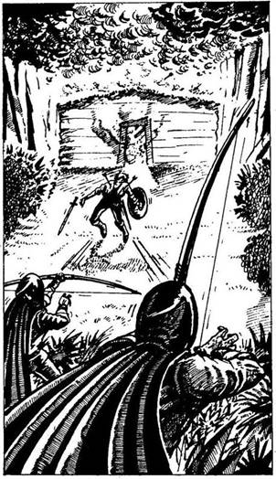
316.
Csakhamar rájössz, hogy egy faház égő teteje füstöl. Két Fekete Elf a szokásos csuklyás, fekete köpenyben lángoló nyílvesszőket lő ki a házra. Hirtelen egy férfi jelenik meg az ajtóban, aki a gomolygó füstből menekül. Karddal és pajzzsal felfegyverezve két támadója felé rohan. Mielőtt a segítségére siethetnél, két nyílvessző Végez vele. A Fekete Elfek előjönnek rejtekhelyükről, és odamennek halott áldozatukhoz. Ha meg akarod támadni a Fekete Elfeket - lapozz a 113-ra. Ha nem akarsz beleavatkozni a dologba - lapozz a 285-re.
317.
A Fantom elkapja a levegőben az amulettet, és porrá zúzza. Hiába igyekszel, hogy megsemmisítsd, ő csak nevet rajtad, majd szabad kezével elkapja a karodat, és menten megbénulsz. Vesztesz 4 ÉLETERŐ pontot! Mire újra érezni kezded a végtagjaidat, a Fantom már messze jár. Merev lábakkal vágsz neki ismét az alagútnak. Lapozz a 190-re.
318.
Amikor megérinted a majommancsot, ujjai összerándulnak, és megpróbálják megragadni a kezedet. Tedd próbára a SZERENCSÉDET! Ha SZERENCSÉD van - lapozz a 292-re. Ha nincs SZERENCSÉD - lapozz a 222-re.

319.
A Gyöngyszemet a hitvány teremtmény hatalmas szemébe vágod, de az visszapattan róla, és széttörik a kőpadlón. Sietve kardot rántasz. Lapozz a 236-ra.
320.
A folyosó egy lépcsősornál ér véget. Ha fel akarsz menni a lépcsőn - lapozz a 271-re. Ha inkább visszamész, és ellenkező irányba indulsz el a folyosón - lapozz a 358-ra.
321.
Azt mondod a Gnómnak, hogy nincs távcsöved. Csalódottan vakarja meg az állát, és így szól: - Nos, tudod, én valóban nagyon szeretem a bronzot, és ha bármilyen bronzból készült tárgy van nálad, boldogan adnék helyette egy varázs karszalagot, mely a csatában erőt öntene kardforgató karodba. Ha van nálad egy bronzcsengettyű és cserélni akarsz vele - lapozz a 69-re. Másképp nem tudsz üzletet kötni a Gnómmal, és vissza kell másznod a létrán a folyosóra, amelyen el kell menned egészen a legutolsó elágazásig. Lapozz a 262-re.
322.
Miután kimondod a varázsigét (vonj le magadtól 2 ÉLETERŐ pontot), kattan egyet a zár. Kardod markolatát jól megszorítod, és kinyitod az ajtót. Lapozz a 98-ra.
323.
Eldobod a homokba a tüzes medált, és ekkor észreveszed, hogy a tenyereden egy nagy „M” betű fájón égő nyoma rajzolódik ki. Sajnos a kardforgató kezed sérült meg. Vesztesz 2 ÜGYESSÉG és 1 ÉLETERŐ pontot! Már tudod, hogy Malbordus valahol előtted ár, ezért amilyen gyorsan csak tudsz, továbbmész dél felé. Lapozz a 159-re.
324.
A földön heverő kis szobor ártalmatlannak látszik, de gyanítod, hogy nem lesz könnyű összezúzni. Ha van nálad harci kalapács - lapozz a 279-re. Ha nincs ilyen fegyvered - lapozz a 193-ra.
325.
Szerencsére a gödör falában kapaszkodókat találsz; nagy nehezen kimászol. Nem vesztegeted az időt pihenéssel, hanem továbbmész a folyosón. Lapozz a 152-re.
326.
Kezed mindkét oldalról érdes falfelületet tapint, és ekkor rájössz, hogy egy folyosón vagy. Szíved nagyot dobban, amikor lassan elindulsz lefelé, de nem látod a falak közé beépített borotvaéles pengét, amely alig egy méterre áll ki a földből. Fájdalmasan belevág a lábadba, és amikor érzed, hogy csorog a véred, pánikba esel. Vesztesz 2 ÉLETERŐ és 1 SZERENCSE pontot! Igyekszel minél előbb elmenekülni a sötét folyosóról. Végigrohansz rajta, és egy ajtóba ütközöl. Lapozz a 79-re.
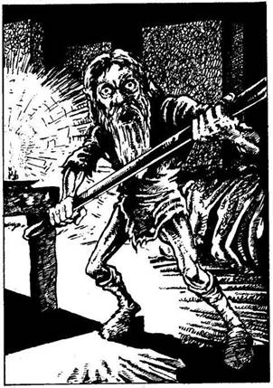
327.
Egyenesen keletnek tartasz, amikor a fejed fölött hirtelen zümmögő hangot hallasz. Felnézel, és három hatalmas, darázshoz hasonló rovart pillantasz meg, amelyek a fejed fölött köröznek. Az egyik Tűlégy egyszer csak feléd röppen. Ha Varázsnyíl varázslatot akarsz alkalmazni - lapozz a 118-ra. Ha karddal akarsz megvívni az óriás rovarokkal - lapozz a 28-ra.
328.
A férfi meghallja, amint az ajtóhoz közelítesz, és a tüzes vassal a kezében rád ront.
Kínzómester ÜGYESSÉG 8 ÉLETERŐ 8
Ha legyőzöd - lapozz a 141-re.
329.
Bedugod a fejedet a mennyezetben lévő lyukon, és egy kicsinyke, túlzsúfolt szobát látsz. Egyetlen gyertya világítja meg, amely egy asztal tetején áll. A szoba egyik sarkában rongyos zsákruhában inas öregember guggol. Amint észrevesz, felkap a földről egy farudat. Mit teszel?
Megszólítod? Lapozz a 83-ra.
Kardoddal rátámadsz? Lapozz a 240-re.
Visszamászol a létrán, és visszamész az utolsó
elágazásig? Lapozz a 262-re.
330.
A folyosó egy T elágazásban ér véget; a szemközti fal előtt a mennyezettől egészen a földig érő mintás függöny lóg. Mit teszel?
Elhúzod a függönyt? Lapozz a 170-re.
Balra mész a folyosón? Lapozz a 335-re.
Jobbra mész a folyosón? Lapozz a 162-re.
331.
Ráveted magad az Éjszaka Rémére, hogy átdöfd a hosszú foggal, de azt egy újabb villám, mely a botból pattan ki, apró darabokra töri. Nincs más választásod - karddal kell rátámadnod. Lapozz a 85-re.
332.
Az öreg előtted biceg, és elvezet egy düledező házhoz. Hármat koppant a botjával az ajtón, erre az kipattan, és két rossz arcú férfi ugrik ki rajta husánggal a kezében. Alig van rá időd, hogy előkapd a kardodat, mielőtt rád támadnak a rablók. Küzdj meg velük egyenként.
ÜGYESSÉG ÉLETERŐ
Első Rabló 8 7
Második Rabló 7 7
Ha legyőzöd őket - lapozz a 89-re.
333.
Amint továbbmész a folyosón, hirtelen közelgő léptek zajára leszel figyelmes. Ha meg akarod nézni, ki az - lapozz a 274-re. Ha inkább megfordulsz és sebesen visszamész az utolsó útkereszteződéshez - lapozz a 250- re.

334.
A gyűrűnek, amit a fazékban találtál, varázsereje van, és védelmet nyújt. Már nem érzed a fájdalmat a füledben, és elő tudod rántani hűséges kardodat, hogy megvívd utolsó, elszánt csatádat. Lapozz a 380-ra.
335.
A sivár folyosó élesen jobbra kanyarodik. Körülbelül tíz méter után egy kis fülkét látsz a jobb oldali falban. Benne kis bronz kerubszobor áll, szájából víz csorog egy tálkába. Ha akarsz inni a vízből - lapozz a 4-re. Ha inkább továbbmész a folyosón - lapozz a 370-re.

336.
Ha Ajtónyitó varázslatot akarsz alkalmazni - lapozz a 369-re. Ha a kardoddal akarod lecsapni a lakatot - lapozz a 68-ra.

337.
Ha a madarak alacsonyabban köröznének, láthatnád, hogy dögkeselyűk. A mérgezett tó fölött cirkálva várják a víz újabb áldozatát. Türelmük ismét elnyerte jutalmát...
338.
Kardforgató karod iszonyúan megégett, és kézügyességed már nem a régi. Vesztesz 1 ÉLETERŐ és 2 ÜGYESSÉG pontot! Gyorsan visszahúzod a kezedet, és eldöntöd, mit csinálj. Mit teszel?
Elveszed az arany csontváz-
szobrot? Lapozz a 386-ra.
Kinyitod az aranyládikót? Lapozz a 82-re.
A szemközti ajtón át elhagyod a
szobát? Lapozz a 3-ra.
339.
Ahogy közelebb kerülsz a villódzó fényekhez, észreveszed, hogy azok feléd közelednek. Három szárnyasbogár hangosan zümmögve készül rád támadni. Egyenként küzdj meg az Óriás Tűzlegyekkel.
ÜGYESSÉG ÉLETERŐ
Első Óriás Tűzlégy 5 4
Második Óriás Tűlégy 5 5
Harmadik Óriás Tűzlégy 4 5
Ha a Tűzlégy nyeri a Fordulót, minden alkalommal dobj egy kockával. Ha a kapott szám 1, 2 vagy 3 - a Tűzlégy kikapcsolja a fényeit, és te újabb 2 ÉLETERŐ pontot vesztesz. Ha a kapott szám 4, 5 vagy 6, a Tűzlégy nem kapcsolja ki a fényeit. Ha te győzöl - lapozz a 38-ra.
340.
A folyosón futva a jobb oldali falban jó magasan egy vasrácsot veszel észre. Ha ki akarod nyitni a kardoddal - lapozz a 95-re. Ha inkább továbbmész - lapozz a 157-re.

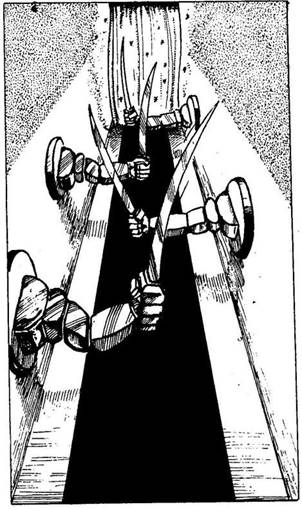
341.
A boltíves átjárót szépen megmunkált kőfaragvány szegélyezi. Benézel a folyosóra. A végében csillámló aranyfüggönyt látsz. A falakban beépített kőkarok kardokat markolnak. Kardodat jól megszorítva óvatosan elindulsz a folyosón. Amint elérsz az első kardig, a kőkar életre kel, és rád támad, miközben a másik három kar a sorára várva a levegőt hasítja.
ÜGYESSÉG ÉLETERŐ
Első Kard 6 4
Második Kard 6 4
Harmadik Kard 6 4
Negyedik Kard 6 4
Ha te győzöl - lapozz a 191-re.

342.
Yaztromo közli veled, hogy a Csapdafelderítő varázslat figyelmeztetni fog minden előtted álló veszélyes csapdára, bár még így is szükséged lesz némi leleményre. Megtanítja neked a varázsigét, melyet ilyenkor kell elmondanod, és azt is hozzáteszi, hogy minden alkalommal, amikor ezt a varázslatot használod, 2 ÉLETERŐ pontnyi energiát
vesztesz. Miután feljegyezted ezt a varázslatot a KALANDLAPODRA és bejelölted rajta a 2 ÉLETERŐ pont veszteséget lapozz a 34-re.
343.
Vakító fény villan, amikor a botból lángok csapnak ki, és egy villám vág a hasadba. Vesztesz 2 ÜGYESSÉG és 4 ÉLETERŐ pontot. Ha túléled a villámcsapást - lapozz a 169-re.
344.
A folyosó elkanyarodik, és ekkor egy férfit pillantasz meg, aki hason fekszik a kőpadlón. Páncélzata csupa vér, kardja vagy egy méterre hever tőle. Amikor meghallja lépteid zaját, nyögve nyúl a kardja után. Mit teszel?
Keresztüldöföd a kardoddal? Lapozz a 101-re.
Elrúgod a kardját, és megpróbálsz
beszélni vele? Lapozz a 306-ra.
Átléped és továbbmész? Lapozz a 80-ra.

345.
Két kezedet összeteszed, é elmondod a varázsigét. A markod megtelik vízzel, amit gyorsan kihörpölsz. Amikor már eleget ittál, leengeded a kezedet, és továbbmész délnek. Lapozz a 377-re.

346.
A Csontváz Ember megragadja a fogat, és hirtelen a földhöz vágja. A fog apró darabokra törik. Kifejezéstelen arcukon mintha megkönnyebbülést látnál, és ekkor elgondolkodsz azon, vajon milyen hibát követtél el. Támadásra kész dárdájukkal neked rontanak.
ÜGYESSÉG ÉLETERŐ
Első Csontváz Ember 9 6
Második Csontváz Ember 9 8
Küzdj meg velük egyenként. Ha te győzöl - lapozz a 96-ra.
347.
Az alagút végül megszakad. Egy kis fülkében magányos gyertya ég, mögötte csillog valami. Ha be akarsz lépni a fülkébe - lapozz a 212-re. Ha inkább visszamész a folyosón és befordulsz jobbra, az alagútrendszer egy másik ágába - lapozz az 59-re.
348.
A lépcsősor aljára érsz, és kezedet magad előtt kinyújtva óvatosan elindulsz. Hirtelen loccsanást hallasz, mintha sár zuhant volna a földre. Tedd próbára a SZERENCSÉDET! Ha SZERENCSÉD van - lapozz az 57-re. Ha nincs SZERENCSÉD - lapozz a 176-ra.
349.
Letekered a zsinórt, és kinyitod a zsák száját. A zsákban egy üveggömböt találsz; belsejében boldogan ugrándozik egy aprócska, hegyes fülű, szárnyas emberke, borsózöld ruhában. Nem hallod a hangját az üvegen át, de rájössz, hogy a Kobold menekülni szeretne a gömbből. Ha ki akarod ereszteni a Koboldot a gömbből - lapozz a 234-re. Ha inkább ott hagyod a Koboldot üvegbörtönében és továbbmész délnek - lapozz a 39-re.
350.
A Fantom megremeg az ezüst láttán, és megpróbál elmenekülni. Te azonban a gombbal pontosan célzol, és találsz. A Fantom elterül, és percek alatt porrá válik; nem marad más utána, csupán a köpenye. Nyersz 1 SZERENCSE pontot! Újult erővel ismét útnak indulsz az alagútban. Lapozz a 190-re.
351.
Betapasztod a füledet, de a fájdalom csak nem múlik. Megtántorodsz, teljesen elveszted tájékozó-dóképességedet és egyensúlyodat. Vesztesz 3 ÜGYESSÉG pontot! Bár vesztes helyzetben vagy, mégis előrántod hűséges kardodat, hogy megvívd utolsó elkeseredett csatádat. Lapozz a 103-ra.
352.
A parton ballagva egy pálmacsoporthoz érsz, de egyik fán sem nő kókusz. Körülnézel, és eldöntöd, merre menj tovább. Ha a sivatagon át mész észak felé - lapozz a 327-re. Ha inkább délnek indulsz el a part mentén - lapozz a 151-re.
353.
Addig mész a folyosón, amíg az élesen balra nem kanyarodik. Amint bekanyarodsz a sarkon, látod, hogy a föld telis-tele van törött üveggel. Miközben átbotorkálsz az üvegdarabokon, hirtelen egy árny bukkan fel előtted a folyosón. Hangos kacajt hallasz, és egy üvegpalack röpül feléd. A lábad előtt csapódik a földhöz, összetörik, és egy pergamentekercs hullik ki belőle. Ha el akarod olvasni, hogy mi van a tekercsen - lapozz a 256-ra. Ha inkább azt akarod kinyomozni, hogy ki akarta hozzád vágni az üveget - lapozz a 77-re.
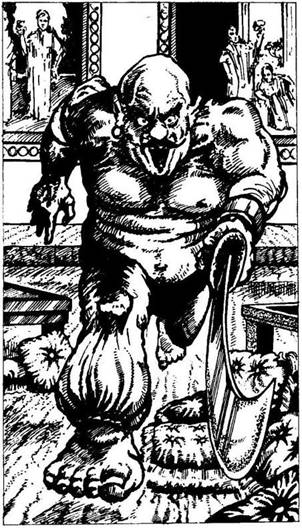
354.
Bár úgy érzed, hogy az aranyesőtől nedves a bőröd, mégis teljesen száraz maradsz. Belépsz a pompásan berendezett terembe. A falakat freskók és festmények díszítik. A csiszolt, csillogó márványpadlón számos alacsony asztalka áll, és párnák hevernek szanaszét. Egy meztelen felsőtestű, hatalmas termetű kopasz férfi bő selyembugyogóban, szétvetett lábbal áll a terem végében. Mindkét keze görbe kardján pihen. Amint meglát, rád ront. Ő a külső templom Rabszolga Őre.
Rabszolga Őr ÜGYESSÉG 8 ÉLETERŐ 8
Ha legyőzöd - lapozz a 235-re.
355.
Az életet jelentő víz nélkül egyre gyengülsz; vesztesz 1 ÜGYESSÉG és 4 ÉLETERŐ pontot. Összeszorítod a fogadat, és továbbvonszolod magad a déli nap irányába - lapozz a 116-ra.
356.
Átvetődsz az ajtón, de nem elég gyorsan ahhoz, hogy felsőtestedet össze ne préselje a kőmennyezet. Fájdalmas reccsenéssel törnek szét a csontjaid, amint a mennyezet eléri a földet. Kalandod itt véget ér.

357.
Csukott szemmel, kinyújtott karral fölemeled a tükröt. Rájössz a Baziliszkusz egyetlen gyenge pontjára: saját tükörképétől pusztul el. Szinte rá sem nézel a döglött Baziliszkuszra, és olyan gyorsan, ahogy csak tudsz, elindulsz délnek. Lapozz a 108-ra.
358.
Egy márványtalapzat tetején egy tálat találsz. A tál tele van friss, zamatos szőlővel. Ha meg akarod enni a szőlőt - lapozz a 112-re. Ha inkább nem eszel belőle, hanem továbbmész - lapozz a 237-re.
359.
Amilyen gyorsan csak tudsz, elrohansz a partról, de képtelen vagy elmenekülni a Kagylószörny elől. Felbuksz a homokban, és egymás után csapódnak a testedbe a kagylók. Lassan elveszted az eszméletedet, és kalandod a Koponyák Sivatagának szélénél ér véget.
360.
A szék hirtelen felmelegszik, s úgy érzed, mintha tüzek kövön ülnél. Dobj egy kockával, és a kapott számot vond le ÉLETERŐ pontjaidból. Ha még mindig életben vagy, felállsz a székről, és továbbvonszolod magad a folyosón. Lapozz a 202-re.
361.
Ahogy felmutatod az Ónixtojást, a Tüskés Szem mozdulatlanná válik, és becsukja egyetlen hatalmas szemét. Kihasználod az alkalmat, és kezedben az Ónixtojással, mely védelmet nyújt számodra, elfutsz a Tüskés Szem mellett. Lapozz a 340-re.
362.
Fölemeled a harci kalapácsot, és lesújtasz vele a Csontsárkányra. Elégedett mosollyal nyugtázod, hogy a szobor apró darabokra törik. Másodszor is a magasba emeled a harci kalapácsot, de ekkor hirtelen mennydörgés rázza meg a gödör mélyét. Lapozz a 288-ra.
363.
Kardot rántasz, és megpróbálod leszúrni a sas félelmetes támadóját. A Pterodactylus azonban túl messze van tőled, így nem tudsz beavatkozni a két repülő teremtmény csatájába. Döntsd el a csatát a sas és a Pterodactylus között.
ÜGYESSÉG ÉLETERŐ
Óriás Sas 6 11
Pterodactylus 8 9
Ha a sas nyeri a légi csatát - lapozz a 242-re. Ha a Pterodactylus győz - lapozz a 48-ra.
364.
Elmész a Szfinx szék és a faliszőnyegek mellett, majd egyenesen átvágsz a folyosón lévő kereszteződésen, hogy megnézd a falfestményt. Lapozz a 161-re.
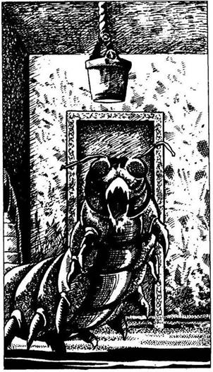
365.
Egy füstös szobába lépsz be. A falakat körös-körül alvadt vér borítja. Közvetlenül a fejed fölött egy kötélen kosár lóg. Veled szemben ugyancsak egy ajtót látsz. Jobbra, a falban alacsony boltív van, ahonnan kaparászás hangjait hallod. Hirtelen egy hatalmas, fekete rovar feje bukkan elő a lyukon, majd megjelenik a fejhez tartozó hosszú, soklábú test. Egy Óriás Százlábú bújt elő rejtekhelyéről, hogy beléd marjon.
Óriás Százlábú ÜGYESSÉG 9 ÉLETERŐ 7
Ha legyőzöd - lapozz a 393-ra.
366.
Megvizsgálod az ezüstbotot, s abban reménykedsz, hátha rájössz, miképp csaphatott ki belőle a villám. Két apró, kidudorodó gömböt veszel észre a bot felületén, s úgy gondolod, az egyik biztosan a tüzelőgomb lehet. A botot az ajtó felé tartod, és eldöntöd, melyik gombot nyomd meg. Ha a bot bal oldalán lévő gombot nyomod meg - lapozz a 343-ra. Ha a bot jobb oldalán lévő gombot nyomod meg - lapozz a 167-re.
367.
Yaztromo közli veled, hogy a Vízteremtő varázslat használata után minden alkalommal ivóvízzel fog megtelni egymáshoz illesztett két markod. Megtanítja neked a varázsigét, amelyet ilyenkor kell elmondanod. Azt is hozzáteszi, hogy furcsa módon ehhez a varázslathoz egyáltalán nincs szükséged energiára. Jegyezd fel a KALANDLAPODRA ezt a varázslatot, aztán lapozz a 34-re.
368.
Az íjpuska nyílvesszője mélyen a nyakadba fúródik. Levegő után kapkodsz, de elkeseredett igyekezeted hiábavalónak bizonyul. Kalandod itt véget ér!
369.
Elmondod a varázsigét (vonj le magadtól 2 ÉLETERŐ pontot!), de nem történik semmi. Nem tudtad, hogy az aranyeső megfoszt összes varázserődtől. Vesztesz 1 SZERENCSE pontot! Nincs más választásod, a kardoddal kell lefeszítened a lakatot. Lapozz a 68-ra.
370.
A folyosó ismét éles kanyart vesz jobbra, és csakhamar egy újabb T elágazáshoz érsz. A folyosó előtted lévő szakasza üres, nincs rajta semmi érdekes, így aztán úgy döntesz, hogy balra mész tovább. Lapozz a 46-ra.
371.
Elmondod a varázsigét (vesztesz 1 ÉLETERŐ pontot!), de nem történik semmi. Nem tudtad, hogy az aranyeső megfoszt összes varázserődtől. A hozzád legközelebb álló Csontváz Ember dárdájával neked ront. Nincs más választásod, harcolnod kell! Lapozz a 211-re.
372.
Összeteszed a két tenyeredet, és vizet varázsolsz. Markod hirtelen vízzel telik meg, és nagyokat kortyolsz a frissítő italból. A délutáni nap könyörtelenül süt, oly erővel, hogy csak úgy perzsel a homok. Két kezedet leereszted, és ekkor megszűnik a víz áramlása. Továbbmész a sivatagon át. Lapozz a 303-ra.
373.
A kígyó mérge halálos. Egyetlen harapása elegendő ahhoz, hogy végezzen veled. Amikor örökre lehunyod a szemedet, a kígyó megmerevedik, és ismét visszaváltozik kígyó alakú bottá.
374.
Az énekhangok egyre erősödnek, és nem tudod megállni, hogy oda ne menj az oltárhoz. Lefekszel a hideg márványlapra, és ekkor körülvesznek a Fekete Apostolok. Hallod, amint egyikük azt mondja, hogy éjfél van, aztán észreveszed, amint egy másik tőrt húz elő. Utoljára már csak azt látod, hogy a tőr a melledbe fúródik. Kalandod itt véget ér.
375.
Amikor eltologatod egymástól a sziklákat, egy skorpió surran ki a sötét repedések mélyéről, és belemar a kézfejedbe. Vesztesz 4 ÉLETERŐ pontot! Ha még mindig életben vagy - lapozz a 155-re.
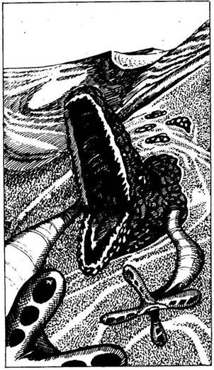
376.
A folyosó jobbra kanyarodik, és addig mész, amíg egy zárt ajtóhoz nem érsz. Kétségbeesett ordítást és kegyetlen nevetést hallasz az ajtó mögül. Ha be akarsz nyitni az ajtón - lapozz a 206-ra. Ha ügyet sem vetve az ordításra inkább továbbmész - lapozz a 66-ra.
377.
Miközben egyenesen délnek tartasz, nem sejted, milyen veszély leselkedik rád. Jobb lábad belesüpped a homokba, és éles fájdalmat érzel, mintha valami a húsodat marcangolná. Egy Homoki Csattogó próbál meg bekapni, s ekkor kardodat a homokba döföd. Az állat megrázza magát, a homok lepereg barna testéről, és előbukkan nagyra tátott, borotvaéles fogakkal szegélyezett állkapcsa. Képtelenség átdöfni a bőrét védő vastag páncélját. Néhány pikkelye hirtelen szétnyílik, és két hosszú tapogatócsáp nyúlik ki belőle; téged akarnak elkapni, hogy behúzzanak az állat nagyra tátott szájába. Már nem törődsz fájó lábaddal, hanem megpróbálod levágni a kitartóan támadó csápokat.
ÜGYESSÉG ÉLETERŐ
Első Csáp 7 7
Második Csáp 7 7
Ha bármelyik csáp két egymást követő Fordulóban győz - lapozz a 149-re. Ha sikerül levágnod mindkét csápot - lapozz a 266-ra.
378.
Belesel a Halál Kutyájának odújába, és látod, hogy egy sötét alagút indul ki onnan. Ha végig akarsz mászni az alagúton - lapozz a 95-re. Ha inkább kimész a szobából és továbbindulsz a folyosón - lapozz a 344-re.
379.
Amikor felpillantasz, látod, hogy a Facipő utcában vagy. Végigmész rajta, míg elérkezel egy útkereszteződéshez, a part mentén haladó Kikötő utcához. Egy pillantást vetsz a tengerre, ahol a nap lassan eltűnik a láthatáron. Sötétség borul rád, és azon gondolkodol, vajon hová is menj. Az utca végében bal kéz felől egy ablakban fényeket látsz, és éneklést meg nevetgélést hallasz. Elhatározod, hogy oda mész, ahol a fényt látod, és csakhamar a Fekete Homár fogadó előtt találod magad. Az ajtón belépve füstös helyiségbe jutsz, ahol zsúfolt asztalok mellett ágrólszakadt pasasok ülnek. Nevetgélnek, viccelődnek és énekelnek. Egyenesen a csaposhoz mész, és megkérdezed, van-e kiadó szobája. Szerencsére akad egy. Adsz neki 1 Aranytallért a szobáért, és megkérdezed, nem tudja-e, hogy másnap reggel indul-e hajó délre. - Lehet, hogy tudok egyet - mondja kissé flegmán -‚ de az információt nem adják ingyen a Feketehomok kikötőben. Még egy Arany, és bemutatlak a hajó másodkapitányának. - Ismét belenyúlsz a zsebedbe, és egy újabb Aranyat adsz a csaposnak. A kocsma túlsó végében lévő egyik kamrához vezet, ahol rámutat egy férfira, aki kopasz fejét selyemsállal tekerte be, és arcán bal fülétől az álla közepéig hatalmas sebhely húzódik végig. - Gargónak hívják
- mondja a csapos. Leülsz Gargo mellé az asztalhoz, bemutatkozol neki, és megkérdezed, vajon hajlandó-e elvinni a hajóján délre. - Tíz Aranytallért fizetsz, és a kajádért meg kell dolgoznod - hangzik a kurta válasz. Gargo nem úgy néz ki, mint akivel alkudozni lehetne, így aztán inkább elfogadod az ajánlatát, és fizetsz. -. Egy órával napkelte után indulunk - mondja. - A hajó neve Belladonna, s ott találod majd a fogadó mellett, a móló végében. Hát akkor a reggeli viszontlátásra; én most visszamegyek a hajóra. - Úgy döntesz, hogy nem vegyülsz el a fogadó kocsmájának kétes figurái között, hanem felmész a szobádba pihenni. Felállsz, és elindulsz a lépcső felé, de egy jól megtermett férfi, aki három korsó sört visz, beléd botlik, és az itala földre ömlik. Ha felajánlod, hogy veszel neki sört a kiömlött helyett - lapozz a 124-re. Ha inkább ráförmedsz, miért ilyen ügyetlen - lapozz a 203-ra.
380.
Malbordus észreveszi, hogy nem fog rajtad a varázsereje. Előkapja megátkozott kardját, és rád támad.
Malbordus ÜGYESSÉG 10 ÉLETERŐ 18
Ha legyőzöd - lapozz a 400-ra.
381.
Elhaladsz a szobor kezében lévő magasra emelt harci kalapács alatt, és az alagút bejárata felé mész - lapozz a 74-re.
382.
Az ajtó jól be van zárva, nem tudod kinyitni. Ha tudsz és akarsz, Ajtónyitó varázslatot alkalmazhatsz - lapozz a 248-ra. Ha képtelen vagy rá, vagy nem akarsz ezzel a varázslattal élni - lapozz a 210-re.
383.
Amint kiejted a varázsige szavait (vonj le magadtól 2 ÉLETERŐ pontot!), az ajtó mögött lévő folyosót hirtelen fény árasztja el. A Halál Küldöncének a kezébe kerültél! A folyosó végében lévő ajtóra egy nagy „L” betűt festettek, és nem tudod kikerülni, hogy rá ne nézz. Vesztesz 4 ÉLETERŐ pontot az átélt sokk miatt. Egyetlen vigaszod, hogy észreveszed azt a pengét, amelyet két fal közé építettek be térdmagasságban, és átléped, anélkül hogy megsérülnél. Átkozod a balszerencsédet, és benyitsz a folyosó végében lévő ajtón. Lapozz a 79-re.
384.
Az Erő Karszalagját viseled. Nyersz 1 ÜGYESSÉG pontot! Visszamászol a létrán, és visszamész a legutolsó elágazáshoz. Lapozz a 262-re.
385.
A homokvihar elég sokáig tart, és igencsak megvisel. Vesztesz 1 ÜGYESSÉG pontot! Végül elül a vihar. Leporolod magad, és továbbmész keletnek. Lapozz a 26-ra.
386.
A szobrocska nehéz, és kimondhatatlanul sokat ér. Ha küldetésed szerencsésen végződik, bőséges jutalomban lesz részed általa. Nyersz 1 SZERENCSE pontot! A szobrocskát beteszed a hátizsákodba, és eldöntöd, mit is csinálj.
Magadhoz veszel néhány
drágakövet? Lapozz a 143-ra
Kinyitod az arany ékszeres
ládikót? Lapozz a 82-re.
Elhagyod a szobát a szemközti ajtón
át? Lapozz a 3-ra.
387.
Miközben lázasan kutatsz egy olyan tárgy után, amellyel a Tüskés Szemet meg tudnád ölni, gyorsan kell döntened. Mit választasz?
Egy Tükröt? Lapozz a 65-re.
Egy Gyöngyöt? Lapozz a 319-re.
Egy Ónixtojást? Lapozz a 361-re.
Egyiket sem? Lapozz a 200-ra.
388.
Hirtelen veszélyt érzel, és elrebeged a varázsigét (vonj le magadtól 2 ÉLETERŐ pontot!). Mágikus fény világítja meg a falra erősített íjpuskát és a két méterrel előtte húzódó drótakadályt. Átléped a drótot, anélkül hogy hozzáérnél, és odamész az íjpuskához. Az alagút végül is egy poros, piszkos szobában ér véget, amelyet a falakon elhelyezett fáklyák világítanak meg. Lapozz a 43-ra.
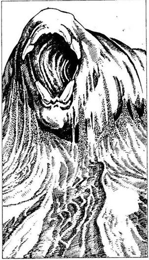
389.
Nem sokkal azután, hogy elhagytad a sátrat, úgy érzed, mintha megremegne a lábad alatt a föld. Hirtelen magasba emelkedik előtted a homok, majd miután hatalmas zuhatagként aláhull, óriási féreg alakja rajzolódik ki előtted. Rémülten veszed észre, hogy éppen egy tüskés fogú Óriás Homokhernyó akar bekapni. A teremtmény legalább húsz méter hosszú, és meg kell küzdened vele.
Óriás
Homokhernyó ÜGYESSÉG 10 ÉLETERŐ 20
Ha te győzöl - lapozz a 18-ra.
390.
Amint az Éjszaka Réme a földre zuhan, kiereszti kezéből az ezüstbotot. Hirtelen recsegést hallasz a fejed fölött. A bot, tulajdonosa kezéből kiesve, rejtélyes módon működésbe hoz egy szerkezetet, és a kőmennyezet ereszkedni kezd. Őrült sebességgel pattansz az ajtókhoz, hogy kinyisd őket, de valamilyen varázserő mindkettőt zárva tartja. Még Yaztromo varázsigéje sem tudja kinyitni. Mit teszel?
Felkapod az ezüstbotot? Lapozz a 290-re.
Megpróbálkozol a kristálykulccsal
(ha van nálad)? Lapozz a 150-re.
Tűz varázslattal próbálsz lyukat égetni az
ajtóba (ha képes vagy rá)? Lapozz a 239-re.
391.
Yaztromo közli veled, hogy az Írásjelolvasó varázslat használatakor képes leszel rá, hogy elolvass bármilyen rovásírással írt szöveget, illetve mágikus jelet. Megtanítja neked a varázsigét, amelyet ilyenkor kell elmondanod, és azt is hozzáteszi, hogy ez a varázslat nem veszi majd túlzottan igénybe az energiádat; csupán 1 ÉLETERŐ pontot vesztesz minden esetben, ha ezt alkalmazod. Lapozz vissza a 34-re, de előbb jegyezd fel ezt a varázslatot a KALANDLAPODRA, és jelöld be az 1 ÉLETERŐ pont veszteséget is.
392.
Nem akarsz áldozatul esni, ezért arra összpontosítasz, hogy kiűzd agyadból az énekhangokat. Dobj két kockával! Ha a kapott összeg ugyanannyi vagy kevesebb, mint ÜGYESSÉG pontjaid száma - lapozz a 174-re. Ha a kapott összeg nagyobb, mint ÜGYESSÉG pontjaid száma - lapozz a 374-re.
393.
Ha le akarod vágni a kosarat a mennyezetről - lapozz a 60-ra. Ha inkább kinyitod a szemközti vasajtót - lapozz a 21-re.
394.
Az ajtó hangosan becsapódik mögötted, és már ki sem lehet nyitni. Követed a lábnyomokat a várost körülvevő fal mentén. Körülbelül tizenöt perc múlva ráakadsz arra az emberre, akitől a nyomok származnak. Legalább egy napja holtan fekszik, arccal a homokban. Szolgának nézed, s biztos vagy benne, hogy nem ő Malbordus. Nincs nála semmi, ami
hasznodra lehetne, így aztán visszarohansz a tölgyfa ajtóhoz. Mivel átmentél az aranyeső alatt, még varázstudományod is hatástalan az ajtóval szemben. A kardoddal kell megpróbálnod kinyitni. Hirtelen egy árnyék suhan el a fejed fölött. Felnézel, és látod, hogy az nem más, mint Malbordus, aki egy hatalmas Sárkány hátán lovagol át éppen az égen. Azért jöttél, hogy legyőzd. A Sárkány felüvölt, és Malbordus gonosz kacagását is hallod. A Sárkány északnak repül már, képtelen vagy megállítani. Malbordus káoszseregének élén lerohanja majd Allansiát, és sötétség borul a világra. Küldetéseden megbuktál!
395.
Olyan hideg van, hogy éjjel alig bírsz aludni. Vesztesz 3 ÉLETERŐ pontot! Már régóta fönn vagy, amikor a nap felkel. Örülsz, hogy sugaraival végre felmelegíti a sivatag levegőjét. Amikor már elég világos lesz ahhoz, hogy lásd, merre is menj, ismét elindulsz délnek. Lapozz a 72-re.
396.
Amikor belegázolsz a vízbe, a karperec is víz alá kerül. A csápos szörny visszariad a karperectől, és csöndben elúszik a vízzel elárasztott szoba legmélyebb zugába. Kihasználod az alkalmat, felmászol a kiugróra, és bemenekülsz az alagútba. Lapozz a 91-re.
397.
A csapda ajtajától lépcsősor vezet a lenti sötétségbe. Erős dohszag csapja meg az orrodat, és
hideg huzat legyinti meg az arcodat. Lemész az egyenetlen lépcsőkön, míg végül a sötétben már semmit sem látsz. Mit teszel?
Fény varázslatot alkalmazol
(ha tudsz)? Lapozz a 224-re.
Még lejjebb mész a sötétbe? Lapozz a 348-ra.
Visszamész a lépcsőn, és kinyitsz
egy másik ajtót? Lapozz a 307-re.
398.
Az éjszaka kellős közepén döngő léptek zajára ébredsz. Csaknem telihold van, és fényénél egy hatalmas alakot pillantasz meg, amely feléd tart. Megmarkolod a kardodat, és felkészülsz, hogy megvédd magad a Barlangi Trollal szemben, aki éjszakai vadászata közben figyelt fel rád.
Barlangi Troll ÜGYESSÉG 8 ÉLETERŐ 9
Ha legyőzöd, Ismét elhelyezkedsz a barlangban, de az éjszaka hátralevő részében már csak hánykolódsz. Reggel folytatod utadat. Lapozz a 305-re.
399.
Nem tudod kinyitni az ajtót, így aztán megfordulsz, és visszamész a folyosón az utolsó elágazáshoz. Lapozz a 250-re.
400.
Malbordusnak vége, és a megmaradt Sárkányszobrok arra várnak, hogy megsemmisítsd őket. Újra és újra felemeled a harci kalapácsot, hogy lesújts rájuk, nehogy ember vagy bármilyen más teremtmény képes legyen bármikor is felhasználni varázserejüket. A Fekete Erdő Fekete Elfjei adott pillanatban meg fogják tudni, hogy vezérüket legyőzték, és visszavonulnak az erdő mélyére. A Rémület Útvesztőjében elszenvedett megpróbáltatásaid megmentették Allansiát. Most már büszkén mehetsz vissza Kőhidafalvára, és visszaadhatod a harci kalapácsot Gillibran királynak. Yaztromo minden bizonnyal megtanít még néhány varázslatra, neked pedig talán módodban lesz elkölteni egy keveset abból a vagyonból, amire utad során tettél szert.